customFormat fill + title-bar overflow


Fix: XlsxReader.row now honors customFormat="1" — it synthesizes empty cells carrying the row's style across the row's spans, so the fill renders the full bar; the title text overflows into those (empty-value) cells.
* fill ([$$-409]* #,##0)


Fix: expandAccountingFill now triggers when the character before * is $ or ] (a [$…] currency tag), not just a literal $.


Slicers. ChartRender.parseSlicers reads slicer1.xml (name/caption/cache), resolves each item index through the slicerCache to the pivotCacheDefinition shared-item labels, and finds the box position from the drawing's slicer anchor (mc:AlternateContent). buildSlicer draws the box, caption header, and item-button grid; selected buttons use the theme accent tinted 45% toward white (Excel's "Light" slicer style). Overlaid via renderSheetToPath.


Multi-series. ChartSpec now holds a list of ChartSeries (name, values, per-series colour from spPr solidFill / theme accent or the palette by index). All builders (column / bar / line / area) loop over series — clustered bars, one poly-line each. The value axis spans all series; fmtNum formats labels with thousands separators instead of %g scientific notation. Single-series (chart-zoo) unchanged.
theme + tint (data bars / color scales)


Fix: parseRule (CF) now threads the workbook themeColors and resolves dataBar / colorScale colours through resolveColorElement (rgb → theme + tint → indexed) instead of rgb only. Fixes theme-coloured colour scales too.


Sparklines. ChartRender.parseSparklines reads the x14:sparklineGroup defs (extLst), resolves each line's data range across sheets (workbook rels → worksheet XML), and buildSparkline draws a scaled poly-line in the cell rect (Layout.cellRect) via VecPath. Wired into renderSheetToPath alongside charts.


Pipeline wiring + polish. ChartRender.parseAllCharts reads every chart with its anchor; renderXlsx overlays them on the sheet through SpreadsheetGrid.widgetWith. Also: pie radius/centre calibrated to Excel (MAE ~4) and the series palette now read from xl/theme/theme1.xml (accent1..6) rather than hard-coded.


Bar (clustered, horizontal). Categories up the left edge (Q1 at the bottom), value axis along the bottom with vertical gridlines. Bar thickness/positions match Excel within 1–2 px. Built in ChartRender.fs on the vector PaintItem primitives (VecPath/VecGroup).


Line with markers. Series line + circular markers; category points at band centres. Matches Excel. Built in ChartRender.fs on the vector PaintItem primitives (VecPath/VecGroup).


Pie. Slices coloured from the accent palette (blue/orange/grey/yellow), swept clockwise from 12 o'clock; arc approximated by short segments. Angles match the 10/25/15/30 split. Built in ChartRender.fs on the vector PaintItem primitives (VecPath/VecGroup).


Area. Filled to the baseline and spanning the plot edge-to-edge (Q1 at the left, Q4 at the right) — the “on-tick” category placement Excel uses for area. MAE ~4. Built in ChartRender.fs on the vector PaintItem primitives (VecPath/VecGroup).


XY scatter. Markers only, both axes numeric with auto ranges (x 0–6, y 0–14) and a full horizontal+vertical gridline grid. MAE ~4. Built in ChartRender.fs on the vector PaintItem primitives (VecPath/VecGroup).


gapWidth=219), heights, colors, title.
Work: the chart bridge, built on the new vector paint layer:
PaintItemgainedVecPath/VecGroup(filled/stroked arbitrary paths + 2×3 transforms), rendered by all three paths (native/canvas/PDF) — proven identical on a hand-built scene.ChartRender.fs: parsexl/charts/chart1.xml(barDir, categories, values, title,gapWidth, gridlines) + the drawing anchor; lay out an Excel-faithful clustered column chart (nice-number Y-axis, gridlines, bar geometry) →PaintItems.- Next: theme colors / multi-series / other chart types, then wire into the normal render pipeline (currently a
--charttestmode).
cellIs with a cell-reference threshold (> $C$1)


$C$1 couldn't be evaluated.Fix: the cellIs evaluator (excel-native-runner) parsed the rule's threshold formula as a numeric constant only, so a cell reference like $C$1 failed and the rule never matched. Added resolveOperand: parse a number, else resolve a single-cell reference (strip $, look up its value) — so "greater than the value in another cell" works. Gate clean; no change to numeric-threshold CF.
\n) are ignored when wrapText is OFF — no row inflation


\n grew row 68 to two lines (31.5 pt), inflating the gray header box and pushing the rest of the section down out of alignment.Fix: wrapping and manual line breaks only apply when wrapText is ON (Excel auto-enables wrapText on Alt+Enter; with it off, the break is ignored and the text renders on one line).
excel-native-runnerauto-grow:needsGrowrequiresWrapText— a bare\nno longer grows the row (was 31.5 pt, now 15.75 pt).Paint.fs: single-line render when wrapText is off, with the\nstripped ("Uses of Funds:" single space, matching Excel — not the double space a space-substitution would give).- Gate clean; Fable clean. Canvas path already gated on wrapText.
horizontal="centerContinuous") centres text across the cell run


Fix: Paint.fs. alignFromFormat now maps centerContinuous to centre; and the text rect is expanded across the contiguous run of centerContinuous cells to the right that have no content of their own, so the text centres over the whole run (Excel's "Center Across Selection", which centres without merging).
showGridLines="0" — suppress the screen gridlines (real-world: The Lyric model)


Fix: the screen renderer always drew the light grey cell grid; it ignored the sheet's showGridLines. Now read from the worksheet:
XlsxReader: parsesheetView showGridLines(default true) onto the sheet.Model.ShowGridLinescarries it; the native runner sets it from the sheet.Paint.fsskips the grey gridline pass when it's false (explicit borders still draw).- Gate clean (78/78 VBA-layout, print-PDF, smoke render); Fable build clean. (Web/canvas SheetJS path defaults to on — separate follow-up.)
"FY"yy → "FY18", not "fy18")

"FY" literal is uppercase as authored).

Fix: CellText.fs excelToNetFormat lowercased the entire date-format code to match the case-insensitive y/m/d/h/s tokens — which also lowercased quoted ("FY") and \-escaped literals. It now matches tokens against the lowercased copy but emits literal content from the original (case-preserved) string. Applies to every date format with literal text.


Fix: the column-width model already collapses hidden="1" columns to 0 px (layout was correct). The remaining issue was that 0-width cells still painted and contributed height:
Paint.fs: skip text emission for any cell whose rect width or height is 0 (hidden column/row) — Excel paints nothing there.excel-native-runnerauto-grow: a hidden (0-width) column no longer wraps its text or grows the row height.- Verified vs the Excel Comp-Sales screenshot; gate clean (78/78 VBA-layout, print-PDF within MAE, smoke render).
0.00;;) and the @ text format on numbers

0.00;; blanks 0 and −5; 0;; blanks 0; @ shows the number as left-aligned text (5 / 0 / −5 / 3.5).
@ shows the number's General text, left-aligned (Excel treats a @-formatted number as text).
@ rendered as the literal "@" (right-aligned).Fix (src/Spreadsheet/CellText.fs + Paint.fs):
- An empty section renders nothing —
formatExcelNumberreturns "" when the value's section is blank (0.00;;hides zeros/negatives,0;;hides zeros). @text placeholder on a number → substitute the number's General text (with quoted literals/escapes unwrapped, colour tags dropped).- Alignment: a
@(Text) number format makes Excel General-align the value LEFT (as text);alignFromFormatnow matches. - Known gap: engineering notation (
##0.0E+0, exponent a multiple of 3) is not yet implemented (.NET has no native support). - Regression guard: 78/78 VBA-layout clean, 12/12 print-PDF within MAE, 92/92 smoke render.
#,##0.0, thousands, 0.0,, millions)

#,##0.0, → 1,234.6; 0.0,, → 1.2; #,##0.0,,"M" → 1.2M.

#,##0, scaled (.NET handles a comma left of the decimal); #,##0.0, / 0.0,, / "M" rendered the full unscaled value (1,234,567.0).Fix: src/Spreadsheet/CellText.fs trailingScale. .NET only treats a comma immediately LEFT of the decimal point as a /1000 scaling specifier, so a trailing comma after the decimals (or a second comma) was ignored. We now count the commas at the end of the section (after the last digit placeholder), divide the value by 1000ⁿ ourselves, and strip them so .NET formats the scaled value — grouping commas inside the digit run are untouched.
- Regression guard: 78/78 VBA-layout clean, 12/12 print-PDF within MAE, 91/91 smoke render;
#,##0,still scales (we do it instead of .NET — same result, no double-scale).
[>=100]…, [Red])


[<0][Red]… collapsed to "0.0" — both because the format mis-routed to the date path.Fix: in src/Spreadsheet/CellText.fs:
- Conditional sections:
sectionForValuenow detects[op N]conditions and picks the first section whose condition is true, falling back to the last unconditioned (default) section — instead of always splitting by sign. - Negative on a default section gets an auto "−" prepended (Excel:
-10→"−10", "Low"→"−Low"); a conditioned/dedicated-negative section formats the absolute value. - Colour anywhere: the colour tag is matched among a section's leading tags, not just at the start, so
[<0][Red]/[Red][>100]both colour correctly. - Date/time mis-routing: the sniffer now strips colour/condition/quoted content first —
[Red](→'d') and"High"(→'h') no longer masquerade as date/time tokens. - Regression guard: 78/78 VBA-layout clean, 12/12 print-PDF within MAE, 90/90 smoke render; shared
CellText.fsso native/canvas/PDF all benefit.


PaintText.Rotation and drew every cell flat (the PDF path already rotated correctly).Fix: in spreadsheet-native/SpreadsheetGrid.fs toRendererCommands, lay the glyph stream out horizontally as before, then wrap it in a Cmd.Group rotation about a leading-edge anchor. Screen space is y-down so Matrix3x2.rotate(θ) turns clockwise; Excel's 1..90 is CCW (θ negative) and 91..180 is CW (θ positive). The run is laid out from a leading-edge anchor and rotated about it, matching the PDF path's anchor (left + 4 px; baseline at the cell bottom for CCW, top + ascent for CW).
- Focused guard:
synthetic-text-rotation.xlsxrenders 45 / 90 / 135 / 180 in the correct direction. - Vertical placement matches Excel (
rot 90at y 88–122 vs 88–121), bottom-aligned. - Horizontal placement now matches too. A 13-angle × 3-length Excel sweep (
tools/excel-parity/build-rotation-sweep.vbs) revealed the rule: right-align the rotated bounding box when 90 ≤ textRotation < 180, else left-align (so CCW-vertical text sits at the column's right, CW-vertical at the left, CCW-angled left, CW-angled right). Implemented by rotating the run then translating its rotated bbox to the L/R + bottom anchor. Verified: rot45/90/−45/−90 land on the same side as Excel (offsets within ~14 px). Applied in all three render paths — native (SpreadsheetGrid.fs), PDF (Pdf.fs, confirmed by pdf↔pdf vs Excel's print PDF, top-crop MAE 4.85), and the web<canvas>(Spreadsheet.fs, which previously didn't rotate at all — now viacanvasTextRotated). - Regression guard: non-rotated text returns the unchanged command list (
Rotation = 0bypasses theGroup); 78/78 VBA-layout clean, 88/88 smoke render, 10/10 print-PDF within MAE.

E6:F7 merge — all four edges at the merge perimeter.

Fix: in src/Spreadsheet/Paint.fs buildCellPaintItems, border sourcing is now merge-aware. visibleCells yields only the merge primary (with the full merge Rect) and skips the trailing cells, so each edge's style is gathered from the merge's perimeter cells rather than the primary's own format. Excel splits a box across the constituent cells (top-left = left+top, top-right = right, bottom row = bottom), so all four edges are needed.
Crisp strokes (pixel-snap): a stroke centred on an integer coordinate with an odd width spreads half a pixel either side and anti-aliases to ~50% grey edges ("half the line is lighter"). The raster paths now round the width and centre odd widths on a pixel centre (n+0.5), even widths on a boundary (n), so the line covers whole pixels — solid black like Excel's GDI, and the double border's two lines render crisp. The 3 px thick border now reads 3 solid-black rows (was 2 black + two 50%-grey edges). Butt caps + snapping give clean corners (Square caps were tried but their half-width extension AA-blobbed into a corner "ball").
Gridlines under borders: Excel hides the light cell gridline on any edge that has an explicit border. We were drawing a grey #a6a6a6 outline around every cell unconditionally, so (a) a neighbour's gridline overdrew the previous cell's border on the shared edge, and (b) the grey bled through a double border's 1 px gap (it read 166-grey instead of white). buildCellPaintItems now emits the gridline as per-edge lines and skips any edge where this cell or its neighbour has a border, so borders own their edges and the double-box gap is white (verified: gap pixel 166 → 245).
- Applied across all three render paths via shared
Paint.fs+ per-path stroking:SpreadsheetGrid.fs(native),Spreadsheet.fs(web<canvas>), andSpreadsheet.Pdf/Pdf.fs(print) — the print filter that dropped the interactiveStrokeRectnow also drops#a6a6a6GridLines so the screen grid still doesn't print. - Regression guard: 78/78 VBA-layout clean, 11/11 print-PDF within MAE, 88/88 smoke render; Fable build clean.


Fix: src/Spreadsheet.Pdf/Pdf.fs withPrintColumnWidths. Excel's print path lays every column out with the non-floored MDW (~7.5 px vs the 7 px floored screen MDW), i.e. ×15/14 wider — including the workbook-default width. We previously applied that scale only to explicit <col> widths, leaving default columns at the 64 px screen width. Now all positive widths scale.
- Screen render is unchanged (this is print-only); on screen both Excel and ours use 64 px columns, which is why the merge-border row above compares cleanly at screenshot scale.
- Regression guard: 11/11 print-PDF fixtures within MAE (diagonal-borders improved, none regressed), 78/78 VBA-layout clean, 88/88 smoke render.
[h] / [m] / [s]) show running totals
![Excel reference — elapsed totals like 25:30:00 and [h]=25](../artifacts/excel/synthetic-elapsed-time-crop.png)
1.0625 days renders as 25:30:00 under [h]:mm:ss (25 elapsed hours, not 1:30:00), [m] shows 1530 total minutes, [s] shows the total seconds, and [hh] zero-pads to the bracket width.
cellDisplayText (120/120) and through the import→render path (spreadsheet-vba-layout): 25:30:00, [m]=1530, [hh]:mm:ss=25:30:00, and 32.5 s rounds to 0:00:33 under [h]:mm:ss but prints 32.500 under [s].000.
[…] bracket, so [h]:mm:ss lost its hours (25:30:00 → :30:00), [m] emitted the literal text [m], and [h] hash-overflowed (#####). [s]/[ss] weren't even recognised as time formats and fell through to the number path.Fix: add a dedicated formatElapsedTime in src/Spreadsheet/Paint.fs. It computes total elapsed seconds from the serial, rounds to the format's fractional-second precision (away from zero), then decomposes: the leading [h]/[m]/[s] bracket carries the running total of that unit (padded to the bracket's letter count) and any trailing mm/ss are the remainder within the parent. hasElapsedBracket routes these (including [s]/[ss], which isTimeFormat missed) into the date/time dispatch. Stock .NET DateTime formats can't express elapsed totals, so this bypasses them entirely.
- Bonus fix: the wall-clock
h:mm:sspath now rounds to the whole second when seconds are shown (Excel renders59.9999996 sas0:01:00; .NET truncated to0:00:59). Closes the last 5 probe mismatches. - Focused guard: all 120 (serial × format) pairs match Excel's
cell.Text; covered by the newsynthetic-elapsed-time.xlsxfixture. - Regression guard: 78/78 VBA-layout fixtures clean, 86/86 smoke render, 10/10 print-PDF within MAE — the whole-second rounding touched the shared date path without disturbing any existing date/time fixture.
- Authoring guard: pure renderer behavior — no schema or UI changes.


Fix: two corrections in the auto-height path. (1) In tools/excel-native-runner/Program.fs the wrap line height now derives from autoRowHeightPt (the OS/2 typo-metric row height, 20 px at Calibri 11) instead of fontPx * 1.2, so each wrapped line advances the row by the same pitch Excel uses. (2) In src/Spreadsheet/Paint.fs wrapLines the usable text width is cellWidthPx - 14 (4 px text inset each side + 5 px OOXML cell padding), which forces the same break points Excel measures — without it our wider measurement under-counted the lines.
- Focused guard:
synthetic-wrap-autoheight.xlsxcolumn A now reports the six-line auto-height that Excel does (VBA-layoutrowHeightwithin 0.5 pt); the 8-line synthetic-wrap fixture also breaks on the right word. - Regression guard: rows with an explicit
customHeightare untouched (literalhtwins); onlywrapTextrows with no stored height auto-grow. - Path guard: 78/78 VBA-layout fixtures clean, 85/85 smoke render, 10/10 print-PDF within MAE.
- Authoring guard: renderer + layout only — no schema or UI changes.


compare-vba-layout.py across all 33 reference fixtures still clean at 0.1-pt tolerance — the harness reads model.RowHeights directly, not the rendered PDF.
Fix: remove a stale historical fudge from src/Spreadsheet.Pdf/Pdf.fs's DrawText case.
- The earlier formula computed
baselineY = rect.Y + (height + fontSize)/2 − 2.0, where the−2.0compensated for that formula's mid-rect anchor. When we later switched to OS/2 win-metrics (blockTopY + lineIndex×lineHeight + ascent) the −2 stuck around even though it no longer had a math reason to be there. - Removed:
baselineY = blockTopY + float t.LineIndex × lineHeight + ascent + t.BaselineShift(was... + t.BaselineShift - 2.0). - Verified by pixel-diff per text row: ours-before sat at y=6, 26, 45, 64, …; Excel at y=8, 28, 47, 66, …; ours-after at y=8, 27, 46, 66, … (≤1-px residual on a couple of rows, font hinting noise).
- Net MAE across 8 print fixtures drops 30.95 → 29.16 (the synthetic-print family and pandas-dimension_large all improve; pandas-test1 shifts +0.3 MAE because its Calibri 12 cells preferred the old fudge — a font-size-specific baseline mismatch we'll chase separately).
- Regression guard: 16/16 print-helper tests pass. 33/33 reference fixtures in the VBA-layout harness still clean. All 79 non-blank fixtures in the corpus still smoke-render.

compare-vba-layout.py still reports 15 pt for cell.Height — the print adjustment lives in Spreadsheet.Pdf only, the model (and harness) keep the Excel-COM-reported value.
Fix: add a print-only row-height transform in src/Spreadsheet.Pdf/Pdf.fs that runs alongside withPrintColumnWidths and withCommentMarkersForPrint.
withPrintRowHeights: maps any row whosemodel.RowHeights[r] == 20 px(the Calibri 11 auto-derived value at 96 dpi) →19.36 px(= 14.52 pt). All other heights pass through unchanged — Title rows (Calibri 18 → 31 px), Calibri 12 default rows (21 px),customHeight="1"locks, and explicithtattributes all keep their stored value.- Why fractional 19.36 rather than 19: Excel's actual print pitch is 14.55 pt, which on the integer pixel grid alternates 19/20 px as cumulative y crosses pixel boundaries. A uniform 19 px renders TOO tight (drift the wrong way); the fractional value lets the PDF rasterizer reproduce Excel's quantization pattern.
- Why only Calibri 11: empirical measurement against
synthetic-print-chrome,pandas-test1,pandas-dimension_large,pandas-ints_spelled_with_decimals. Calibri 12 prints at 21 px = 15.75 pt (matches editor), Calibri 18 prints at 31 px = 23.25 pt (matches editor), Arial 10 withcustomHeight="1"prints at 21 px = 15.75 pt (the locked stored value). Only Calibri 11 auto exhibits the editor-vs-print discrepancy. - Why model untouched:
cell.Heightvia Excel COM still reports 15 pt for these rows, so the VBA-layout harness must keep reading 15 pt. The transform lives inPdf.fsonly, applied aftertoModelbut before pagination / paint, so the layout TSV emitter (which uses the unscaled model) is unaffected. - Regression guard:
compare-print-pdfs.pybody MAE on the 7 multi-row print fixtures drops 13-15% (synthetic-print 4.58→3.97, synthetic-print-centered 5.81→5.00, synthetic-header-footer-runs 4.66→3.97, synthetic-header-footer-runs-footer 4.65→3.97, synthetic-first-page-number 4.66→3.97, pandas-test1 1.54→1.51, pandas-dimension_large 0.13 unchanged). synthetic-print-chrome stays within noise (its body residual is dominated by the print-chrome bands, not row pitch). - Risk: if a workbook explicitly sets
ht="15.0" customHeight="true"we'd shift it to 14.52 pt incorrectly. No fixture in the test corpus trips that; if one does, the model needs a per-row "auto vs explicit" flag. - Print helper tests: 16/16 still pass.
compare-vba-layout.pyacross all 33 reference fixtures still clean at 0.1-pt tolerance.
<sheetFormatPr customHeight="1"/> + inherit font size from workbook default

customHeight="1" flag forces Excel to honor defaultRowHeight as a literal lock — even though every cell is Arial 10 (which would otherwise auto-height to 12.75 pt).
SheetFormat.CustomDefaultHeight — when set, every row without its own ht uses defaultRowHeight directly instead of the font-derived auto-height table. compare-vba-layout.py goes from 11 y-mismatches + 11 height-mismatches + 11 fontSize-mismatches to clean across every field.
customHeight="1" wasn't parsed so defaultRowHeight=15.75 was discarded, and (b) font 1's missing <sz/> fell through to the renderer's 11 pt fallback instead of inheriting font 0's 10 pt, so the auto-height landed on the wrong table row (12.75 pt for size 10, off-by-one for size 11 → 15 pt).Fix: two parser additions + one runner branch.
src/Office.Formats/src/XlsxReader.fs SheetFormat: addCustomDefaultHeight: bool; parse<sheetFormatPr customHeight="1"/>into it. The attribute lives on the sheet element, distinct from the per-rowcustomHeightattribute (which we already parse for individual rows).src/Office.Formats/src/XlsxReader.fs parseStyles: when a parsed<font>entry has no<sz/>, inherit the size from font 0 (the workbook default). Excel COMFont.Sizereturns the resolved size regardless of where it's stored — we now match.tools/excel-native-runner/Program.fs: branch onsheet.Format.CustomDefaultHeight. When true, every non-explicit row getsdefaultRowHeight * 96/72directly (no font lookup); when false, fall through to the existing font-derived auto-height with workbook-default-font floor.- Bonus fix in the same area:
storedWidthToPixelsnow floors row height conversions to integer pixels (Excel roundsht="19.4"→ 25 px floor → 18.75 pt reported), fixingpandas-df_empty/pandas-df_equals/pandas-df_header_oobin the same pass. - Regression guard: print-helper tests pass 16/16.
compare-print-pdfs.pybody MAE onsynthetic-printunchanged;synthetic-print.pdfbyte-identical at 86984 bytes. All 19 reference fixtures in the VBA-layout harness now clean at 0.5 pt tolerance.
customHeight="false"

defaultRowHeight="12.8" is silently overridden — Excel computes each row's height from the font's metrics whenever the row's customHeight is false.
compare-vba-layout.py: 0 y/height mismatches at 0.1-pt tolerance).
defaultRowHeight=12.8 pt — 2 pt shorter than Excel's 15 pt. The Title row is also slightly compressed because we ignored the font's metrics and used the stored attribute even though customHeight="false".Fix: teach the native runner to ignore defaultRowHeight for customHeight="false" rows and compute auto-height from per-row max font instead — falling back to the workbook-default font's auto-height for rows that have no cells of their own.
tools/excel-native-runner/Program.fs: newautoRowHeightPttable (Calibri 8→11pt up through 72→90pt) with linear interpolation between entries, plus extrapolation past the table at the high end.- Per-row computation: walk
cellsonce to record max font size per row, then for every row not inexplicitRowssetheight = max(autoRowHeightPt(workbookDefaultFontSize), autoRowHeightPt(rowMaxFont))converted to pixels. - Verified end-to-end against the Excel COM oracle:
compare-vba-layout.pygoes from 13 height-mismatches + 12 y-mismatches onpandas-dimension_largeto clean across every field at 0.1-pt tolerance.pandas-test1Sheet4 (Calibri 12 workbook default, mixed Calibri 11/12 cells) likewise resolves its 6 y-mismatches in the same pass. - Regression guard:
compare-print-pdfs.pybody MAE onsynthetic-printunchanged (its workbook default is Calibri 11 → 15 pt, same as our prior 15.0 fallback). All 79 non-blank fixtures intests/test-documents-excel/still render throughspreadsheet-pdf-runnerwithout error. - Print-helper tests: 16/16 still pass.

m/d/yyyy h:mm date renders as ########### — the format's template doesn't fit the column, so Excel hashes regardless of the underlying date's specific length. Col B: General-format value is trimmed to 0.98026851 — eight precision digits, exactly fitting floor((88 − 5) / 8) = 10 chars (the leading 0. consumes two).
########### on every row, matching Excel — the fit check now takes max(measuredWidth, charCount × MDW) so dates can't sneak through HarfBuzz's narrower glyph measurement. Col B: 0.98026851, matching Excel's General-format trim exactly.
1/3/2000 0:00, …) because our measured glyph widths squeezed it into the cell; only rows 7-8 hash. Col B: 0.9802685 — seven precision digits because the General-format usable-width formula subtracted an extra full MDW char on top of the 8-px inset, stealing one digit from every value.Fix: drop the extra MDW buffer from generalNumberDisplay now that storedWidthToPixels and charsToPixelsDefault use the correct OOXML §18.3.1.13 formula (stored widths skip the +5; default chars include it).
src/Spreadsheet/Paint.fs generalNumberDisplay:usableWidth = max 0 (cellWidthPx − 5)(wascellWidthPx − 8 − mdwPx fontPt). The −5 matches OOXML's 4-px cell padding + 1-px gridline; subtracting the extra MDW char was a workaround for the earlier column-width bug and now over-trims.src/Spreadsheet/Paint.fs fitOrOverflow: split the fit-check from the hash-budget. Fit usescellWidth − 8(the renderer's 4-px inset on each side); hash count usescellWidth − 5(OOXML padding). And the fit-check now takesmax(measure text, text.Length × MDW)so date formats that Excel hashes never sneak through HarfBuzz's narrower-than-GDI measurement — pandas-test1 Sheet1 col A now hashes every row (matches Excel) instead of fitting the date in rows 2-6.tools/excel-native-runner/Program.fs storedWidthToPixels: round to integer pixels (Excel's reportedcell.Widthis integer-px; without rounding our column x-positions drift ~0.1 px per column and accumulate).src/Office.Formats/src/XlsxReader.fs: missingapplyXxxattribute now defaults to "apply" — matches Excel's de-facto behavior. Fixespandas-test_none_type's@text-format cells inheritingGeneralinstead of the format thexfactually points at.- Oracle pass:
compare-vba-layout.pyat 0.1-pt tolerance is now clean across all 8 reference fixtures exceptpandas-test_decimal's 6 bold-fields (the table-style overlay being baked into cell format — tracked separately, no visual impact). - Regression guard:
compare-print-pdfs.pyMAE onsynthetic-printunchanged. 16/16 print-helper tests still pass. 79/79 non-blank fixtures still smoke-render.
<sheetData>

<sheetData>; col C is green for all 5 rows. The col-style applies to missing-cell positions only — col B's cells (which exist in <sheetData> with no s=) use the default no-fill style.

<col style> wasn't consulted for missing cells, so col A and col C rendered with only the cells that actually existed in <sheetData> (the A1 and C1 headers) — rows 2-5 in those columns rendered blank-white, diverging from Excel's col-fill behaviour.Fix: after building the cell map, walk the used range and materialise empty-but-styled cells where the column has a style and no cell already covers the position.
src/Office.Formats/src/XlsxReader.fs:ColumnInfo.Stylewas already parsed (earlier turn) but unused; this turn finally consumes it.tools/excel-native-runner/Program.fs: post-pass overcells. For each column with aStyleresolving to a "non-trivial" cellXf (carries a fill / border — pure font / number-format-only styles skip because they have no visual effect on an empty cell), iterater0 ∈ [0, maxRow], skip positions already in the map, and add{ Value = Empty; Format = style; Comment = None }.- Bounded by
maxRow/maxCol— without that we'd materialise ~1M cells per styled column for any workbook (Excel's grid is 1,048,576 × 16,384). The used range is the natural boundary: anything past the last data row / column is invisible at typical viewport sizes. - Cells that exist with explicit
s=still win; cells that exist withouts=still use cellXf 0 (default). Only genuinely missing positions get the col fallback — matches Excel's actual semantics per OOXML §18.3.1.13.
Guard: dotnet fsi tests/print/helpers.fsx passes 16/16. compare-print-pdfs.py MAE on synthetic-print unchanged (none of the print fixtures use col-style). Real-world impact: every pandas-export workbook that puts a per-column number format via <col style> now renders correctly for empty cells past the data extent.
cell.Text + geometry vs Excel COM
A2: width=71.25pt height=15.75pt fontSize=12 text=###########
pandas-test1!A2. cell.Text is the displayed string with format + Excel's ##### overflow rule applied — authoritative.A2: width=70.99pt height=16pt fontSize=12 text=##########
spreadsheet-vba-layout-tsv.sh. Geometry within 0.3 pt; fontSize matches; text off by one # (overflow-count rule slightly different).fontSize: 32 mismatches (11 vs 12)
y: 15 mismatches (~0.25pt/row drift)
Built: an oracle-vs-ours comparison harness that exposes per-cell diffs without pixel rasterization.
tools/spreadsheet-vba-layout/Program.fs: .NET CLI loads an XLSX viaExcelNativeRunner.toModel, walks the used range, and emits a TSV matchingextract-excel-layout.vbs's schema column-for-column. Uses the now-publicPaint.cellDisplayTextso thetextfield matches what the renderer would draw.tools/excel-parity/spreadsheet-vba-layout-tsv.sh: bash wrapper mirroringexcel-layout-tsv.sh's call signature.tools/excel-parity/compare-vba-layout.py: TSV diff joining by(sheet, address); configurable geometry tolerance (default 1 pt). Reports per-field mismatches with sample rows;--verbosefor all.src/Spreadsheet/Spreadsheet.fs: newGetVbaLayoutCells()method on the Spreadsheet class returns the same per-cell JS objects, ready for a future Playwright-driven browser-side capture analogous to Word'scompare-vba-layout-results.mjs.src/Spreadsheet/Paint.fs:cellDisplayTextpromoted from private to module-level so both the CLI and the Spreadsheet method can reuse it.- Bug caught + fixed via the harness — fontSize default propagation: cells without
s=on<c>now resolve tocellXfs[0](the default cell format) so they inherit the workbook's default font + size. Previously they fell through to the renderer's hardcoded Calibri-11 fallback. Fixed inXlsxReader.fs applyStyling: whenStyleIndex = NoneANDstyles.[0]exists, attach it.compare-print-pdfs.pyMAE on every existing print fixture stays byte-identical (their cells already carried explicits=). - Quantified remaining gaps: y-position drift ~0.25 pt/row (the row-pitch issue); text-overflow count off by 1
#char on date cells. Both visible in the harness output but not yet in the pixel MAE on existing fixtures — gives us a clear target list for follow-up work.
Guard: tests/print/helpers.fsx passes 16/16. compare-print-pdfs.py on all four print fixtures + pandas-test1 + pandas-dimension_large MAE byte-identical to prior runs. New CLI builds cleanly; comparison runs in ~3s per fixture.


Paint.fs's rich-text branch walks the concatenated source text through wrapLines, chunks each run by line boundary, and emits a per-run DrawText per (line, run) pair at the line's y + the run's x-offset within the line. Breaking whitespace between lines is absorbed by the cursor.
<rPr> blocks stripped), the wrap path falls through to plain rendering — every line in the cell renders in the default black-on-white style, losing the bold / red / italic / blue distinctions.Fix: none needed — the implementation already routed wrap+rich correctly through the per-line, per-run emission loop. This row documents the working state (the tracker note saying "wrap with per-run formatting still falls back to plain rendering" was stale).
- The path lives in
src/Spreadsheet/Paint.fsPass 3, theSome runs, Some m when not (List.isEmpty runs)branch: builds a cursor through the concatenated run text, walkswrapLines's line breaks, and per line emits oneDrawTextper run-slice that falls inside that line — each carrying the run's bold / italic / color / size / underline / strike state. - The render uses each line's
LineIndex+LineCountfor vertical placement and per-run width measurements for horizontal cursor advancement. - Browser/Fable rich text already works (see the earlier Browser XLSX import — inline rich-text runs row); this row confirms the print/PDF path also handles wrap correctly.
Guard: dotnet fsi tests/print/helpers.fsx passes 16/16. compare-print-pdfs.py MAE on synthetic-print unchanged. Tracker P1 entry updated to mark this as resolved.
showZeros="false"

showZeros is opt-out; other content (text, non-zero numbers) renders normally.
Number 0.0 (and a wrapping Formula (_, Number 0.0)) become Empty when the sheet's ShowZeros flag is false. Cell fills / borders / row-context stay intact — only the text emission disappears.
showZeros wasn't parsed off <sheetView>, so every zero cell rendered the literal "0" — visible in row 3 and row 5. (Fixture rebuilt with the attribute stripped to recreate.)Fix: parse showZeros on <sheetView>, surface it on Worksheet, then null-out Number 0.0 cell values when off.
src/Office.Formats/src/XlsxReader.fs: addedShowZeros: booltoWorksheet(default true — Excel's default). A smallshowZeroshelper readssheetViews/sheetView/@showZerosand only flips false when the attribute is"0"or"false".tools/excel-native-runner/Program.fs: per-cell value resolve mapsNumber 0.0 → Empty(and the formula-wrapped variant) whensheet.ShowZerosis false. Format intact — only the value drops out, so the Paint pass renders no text but still emits any cell fill / border the cell carries.
Guard: dotnet fsi tests/print/helpers.fsx passes 16/16. Fixtures without showZeros default to true and render identically (compare-print-pdfs.py MAE on synthetic-print stays byte-identical).

thin ≈ 1 px, medium ≈ 1.75 px, thick ≈ 3 px, double = two parallel 1 px strokes, dashed = ~3 px on / 3 px off pattern.
thick bumped from 2.5 to 3.0 px; medium from 1.5 to 1.75 px so the visual gap with thin reads cleanly. Dashed / dotted / dashdot variants now emit as a chunked sequence of short solid GridLine segments rather than one continuous line.
thick rendered at 2.5 px (only marginally thicker than medium's 1.5), and the dashed cell drew as a solid box — the PDF emitter always called SetDash([], 0.0) and the dash pattern wasn't encoded anywhere in the GridLine item.Fix: three changes — weight scale, dash chunking, and border collapse for shared edges.
src/Spreadsheet/Paint.fs:borderStrokeWidth—thickgoes2.5 → 3.0,mediumgoes1.5 → 1.75. Visual classes now read as distinct.emitBorderSide: when the style isdashed/mediumdashed/dotted/dashdot/dashdotdot/slantdashdot/hair, the helper walks the edge in on/off chunks and emits a separateGridLineper on chunk. Pattern lengths picked to read as the named style at 96 dpi: dashed = 3/2.5, dotted = 1/1.5, dashdot = 3/4 with a second 1-px pass offset by 4 px.doublepath unchanged (already correct).- Border collapse: when two adjacent cells both declare a border on their shared edge, Excel draws only the heavier one. We now build a
(row, col) → CellFormatmap for the slice and, before emitting each side, compare against the neighbour's opposite side using OOXML border priority (not raw stroke width — Excel ranksdouble>thick>medium>thin> dashed-family). Same-weight ties resolve to "top wins" for vertical edges and "left wins" for horizontal edges. - OOXML border priority: using stroke width for collapse comparison was wrong — Excel's collapse follows the OOXML "style hierarchy" where
doubleoutranksthickeven though it paints thinner. With the priority lookup (None < Hair < Dotted < Dashed-family < Thin < Medium < Thick < Double), the thick/double boundary now correctly drops the thick stroke and renders the double pattern at the shared edge — matching what Excel does. (An earlier "exempt double from collapse + inset both strokes inward" attempt over-engineered this and produced the wrong layered look; the simpler "double wins via priority" rule is what Excel actually implements.) - No
GridLineschema change — the chunking + collapse logic lives entirely inPaint.fs, so PDF + PNG + browser renderers stay in sync.
Guard: dotnet fsi tests/print/helpers.fsx passes 16/16. The four pre-existing print fixtures don't use medium / thick / dashed borders (they're plain print grids), so compare-print-pdfs.py MAE stays byte-identical to the prior run. Cells with no border at a shared edge are unaffected by the collapse pass (weightOf None = 0).
[$EUR-407], [$£-809], …

[$CCY-NNN] is emitted as a literal prefix; the locale code itself is metadata Excel uses for month names / decimal separators but renders nothing.
Paint.fs now substitutes [$CCY-NNN] with 'CCY' (a .NET-format literal) before handing to Double.ToString; an empty CCY ([$-409]) collapses to nothing.
[$...] block, so the currency string was silently discarded — every value rendered as a bare number. (Fixture rebuilt with prefixes stripped to recreate the look.)Fix: route the [$currency-locale] capture group into the .NET format string instead of dropping it.
src/Spreadsheet/Paint.fs: new regex\[\$([^\]\-]*)(?:-[0-9A-Fa-f]+)?\]captures the optional currency string and the optional-LOCALEtail; replaces with'CCY'(or empty when CCY is empty). Color-tag stripping is now a separate pass on the leftover code, since color tags are handled bynumberFormatColorForValue.- Fixed a related dispatch bug:
isDateFormat/isTimeFormatpreviously matched on the raw section, so the literalyinside[$JPY-411]tripped the date formatter and rendered the literal pattern#,##0. Both predicates now runwithoutLocaleTagsbefore the substring sniff.
Guard: dotnet fsi tests/print/helpers.fsx passes 16/16. The four pre-existing print fixtures don't use locale prefixes, so compare-print-pdfs.py MAE stays byte-identical to the prior run.
textRotation 0/45/90/-45/-90


TextMatrix(cos θ, sin θ, -sin θ, cos θ, x, y). CCW anchors at cell bottom-left, CW anchors at cell top-left + ascent — without that split, CW text leaked into row 2. Per-segment cursor advances along the rotated baseline. Row 2 still flat.
textRotation wasn't parsed, so every label rendered horizontally regardless of the cell's alignment. (Fixture rebuilt with the attribute stripped to recreate.)Fix: parse textRotation and apply via PDF text matrix.
src/Office.Formats/src/XlsxReader.fs: addedTextRotation: intto the parsed cell style; reads the attribute (0 default).src/Spreadsheet/Model.fs: mirrored onCellFormat.tools/excel-native-runner/Program.fs+src/Spreadsheet/XlsxImporter.fs: propagate / default.src/Spreadsheet/Paint.fs: addedRotationtoPaintText(6 emission sites updated; headers / heading-strip stay at 0).src/Spreadsheet.Pdf/Pdf.fs: when rotation ≠ 0, compute(cos θ, sin θ)from the Excel encoding (1..90 = CCW, 91..180 = CW with angle-(N - 90), 255 = stacked → treated as 0). Anchor at cell bottom-left for CCW or top-left + ascent for CW; per-segment cursor walks(cosθ × cum, sinθ × cum)in PDF coords. Each segment'sTextMatrixcarries the rotation so font / colour switches mid-run still rotate consistently.
Guard: dotnet fsi tests/print/helpers.fsx passes 16/16. Pre-existing print fixtures are byte-identical (none use textRotation; the new field defaults to 0 and the rotation branch is gated on that). Stacked (textRotation="255") and horizontal-alignment-aware anchoring for rotated cells remain follow-ups.
wrapText cells
Renderer.Text.measureWidth over-counts a hair, but no text is clipped and the next row appears below the wrapped block. Excel's extra pad-bottom isn't replicated yet.
Fix: after building rowHeights in the native runner, scan every wrapText cell and bump the row height to fit the wrapped block.
src/Spreadsheet/Paint.fs:wrapLineswas private; promoted to public so the runner can re-use the same word-break logic the renderer uses (literal\nfirst, then word-wrap on whitespace with char-break fallback for super-long tokens).tools/excel-native-runner/Program.fs: post-pass overcells: for each cell whereWrapText = trueOR the value contains literal\n(Alt+Enter authored), and there's no explicit rowht, measure the block against the column width usingRenderer.Text.measureWidth(with a font cache keyed by family/bold/italic to avoid hitting the font resolver per cell). For wrap cells we re-usePaint.wrapLinesto count word-wrapped lines; for hard-break-only cells we just split on\n. ThenrowHeights[r] := max current (lineCount × fontPx × 1.2).- Explicit row heights are preserved — Excel honors a user-set
<row ht="...">even when the text doesn't fit; our pass skips rows that already have an entry inexplicitRows.
Guard: dotnet fsi tests/print/helpers.fsx passes 16/16. None of the four pre-existing print fixtures rely on auto-growth (their rows carry explicit heights or non-wrap text), so compare-print-pdfs.py MAE stays byte-identical to the prior run. The browser/Fable import path doesn't yet auto-grow — would need a JS-side measurer (out of scope).
shrinkToFit


Paint.fs measures the natural-size text against the cell's usable width; on overflow it scales the font down by cellWidth / textWidth and re-binds the per-cell measurer to the new size so wrapping / overflow logic downstream stays consistent.
shrinkToFit wasn't parsed, so the long string spilled across column B and overlapped its "centered too-wide text" neighbour. (Fixture rebuilt with the attribute stripped to recreate the look.)Fix: parse the attribute and shrink the font when the natural text would overflow.
src/Office.Formats/src/XlsxReader.fs: addedShrinkToFit: boolto the parsed cell style (default false).src/Spreadsheet/Model.fs: mirrored onCellFormat, default false.tools/excel-native-runner/Program.fs+src/Spreadsheet/XlsxImporter.fs: propagate / default the field.src/Spreadsheet/Paint.fs: after computing the text rect, ifShrinkToFitis on (and the cell isn't in wrap mode — Excel ignores shrink for wrap cells), measure the displayed text at the cell's font size and, on overflow, scale the font bycellWidth / measuredWidth(clamped at 1 pt). Shadow the localfontPt+measurebindings with the shrunk values so the rich-text and plain-text branches below use the smaller size.
Guard: dotnet fsi tests/print/helpers.fsx passes 16/16. None of the four pre-existing print fixtures use shrinkToFit, so compare-print-pdfs.py MAE stays byte-identical to the prior run.
<alignment indent="N"/>

indent climbs — measured at ~10 px per unit (text-left 71→81→92→112 for indent 0/1/2/4).
Paint.fs shifts the text rect by format.Indent * 1.4 * mdwPx fontPt for left / distributed alignment. (Originally shipped at ×3, which over-indented ~2×; retuned after measuring Excel — caught on the jumeirah model where "Base/Downside/Upside" sat too far right.)
XlsxReader didn't parse the indent attribute, so every row rendered with the cell's normal 4 px left padding — every row started at the same x.Fix: parse indent off <alignment>, carry it on CellFormat, and shift the text rect during render.
src/Office.Formats/src/XlsxReader.fs: addedIndent: intto the parsed cell style (default 0).src/Spreadsheet/Model.fs: mirrored onCellFormat, default 0.tools/excel-native-runner/Program.fs: propagates.src/Spreadsheet/XlsxImporter.fs: defaults to 0 on the browser import path (the JS-bridge cell style doesn't surface indent yet).src/Spreadsheet/Paint.fs: Pass 3 widens the text-rect padding byformat.Indent × 3 × mdwPx fontPt. Applied from the left for left/distributed alignment and from the right for right alignment; center is unaffected (matches Excel).
Guard: dotnet fsi tests/print/helpers.fsx passes 16/16. None of the four pre-existing print fixtures carry an indent attribute, so compare-print-pdfs.py MAE stays byte-identical to the prior run.
[Red], [Green], …

-987.65 renders in red; column B's 1,234 in green, (987) in red, 0 in default black. Excel routes section-tag colors to the cell's font colour.

formatExcelNumber stripped [Red] / [Green] / etc. from the format code and dropped the colour on the floor; every value rendered in the cell's nominal font colour (black). (Fixture rebuilt with the bracket-colours stripped to recreate the same look.)Fix: route section colour tags into the cell's text colour during render.
src/Spreadsheet/Paint.fs: newnumberFormatSectionColorrecognises the eight Excel-named colours (Red,Black,Green,White,Blue,Magenta,Yellow,Cyan) at the start of a section.numberFormatColorForValuepicks the section that applies to the cell's value and returns its colour.- Pass 3 of
buildCellPaintItemsnow resolvessectionColorfor numeric values + numeric formula results and uses it as the cell's text colour ahead offormat.TextColor; explicit cellXf colours win when no section colour is set. sectionForValue: fixed off-by-one — a 2-section format (pos;neg) now uses the positive section for both positive and zero values, matching Excel. Previously zero fell through to the negative section and rendered with a leading minus.
Guard: dotnet fsi tests/print/helpers.fsx passes 16/16. compare-print-pdfs.py on the four pre-existing print fixtures keeps every crop's MAE byte-identical (none use coloured number formats and none rely on the old zero-section quirk).
cellComments="none")

cellComments="none" strips the marker from print output even though the comment data is in the workbook.
Format.HasComment on every cell when PageSetup.CellComments = None (or AtEnd), so the Paint pass that draws the red triangle simply has no cells to act on.
Paint.fs's Pass 5) — diverging from Excel on every workbook with comments. (Fixture rebuilt with cellComments="asDisplayed" to recreate the pre-fix look; that mode now bypasses our suppression on purpose.)Fix: parse cellComments off <pageSetup> and apply a model-level strip-pass before the print emitter walks the cells.
src/Office.Formats/src/XlsxReader.fs: addedCellCommentsPrintDU (None/AsDisplayed/AtEnd) and parsing offcellComments; defaultNone(matches Excel).src/Spreadsheet/Model.fs: mirrored the DU + field;defaultPageSetupdefaults toCellCommentsNone.tools/excel-native-runner/Program.fs: propagates.src/Spreadsheet.Pdf/Pdf.fs: newwithCommentMarkersForPrintpass clearsHasCommenton every cell whenCellCommentsisNoneorAtEnd.AsDisplayedkeeps the existing on-screen marker rendering — the full balloon-style Excel printout for that mode is out of scope here.
Guard: dotnet fsi tests/print/helpers.fsx passes 16/16. The four pre-existing print fixtures have no commented cells, so compare-print-pdfs.py MAE stays byte-identical to the prior run. synthetic-formatting.xlsx (the other fixture with comments in the corpus) now also matches Excel's default suppression.
scaleWithDoc + scale

scaleWithDoc's default-true is what drives that.
pagination.Scale) and H/F text (newly scaled via hfTextScale) at 2×. The &NN size codes are unscaled at parse time and multiplied at render time so the existing mixed-run header tests still pass.
hfFontSizePt was hardcoded to 10.0, so headers and footers ignored the page-scale and rendered tiny next to the magnified body — the opposite of Excel's scaleWithDoc-default behavior. (Fixture rebuilt with scaleWithDoc="0" to recreate the pre-fix look.)Fix: read scaleWithDoc off <headerFooter> and multiply H/F font sizes by pagination.Scale when the flag is on (its default).
src/Office.Formats/src/XlsxReader.fs: addedScaleWithDoc: booltoHeaderFooter; parsesscaleWithDocoff the element with a true default (matches Excel — the attribute is only ever written when the user explicitly opts out).src/Spreadsheet/Model.fs: mirrored the field, default true.tools/excel-native-runner/Program.fs: propagates.src/Spreadsheet.Pdf/Pdf.fs: introduceshfTextScale(=pagination.ScalewhenScaleWithDocelse 1.0), exposes it tosectionOps, and applies it inside the per-run loop so both the default 10 pt fallback and any explicit&NNsize scale together.maxHeaderFooterFontSize+ the header-baseline anchor also use the scaled fallback so vertical placement still works for large runs at high scales.
Guard: dotnet fsi tests/print/helpers.fsx passes 16/16. compare-print-pdfs.py against the four pre-existing print fixtures keeps every crop's MAE byte-identical to the prior run (they all run at scale=100, so hfTextScale=1 and the path is unchanged).
blackAndWhite="1"


FillRect becomes white, every StrokeRect / GridLine / text glyph becomes black. Bold / italic / underline still survive (the flag is per-page color remap, not a style strip).
blackAndWhite wasn't parsed off <pageSetup>, so the renderer kept the source fills (yellow + green) and font colours (red + blue) — diverging from Excel's B&W output.Fix: read blackAndWhite off <pageSetup> and apply a per-op color remap in the PDF emitter.
src/Office.Formats/src/XlsxReader.fs: addedBlackAndWhite: booltoPageSetup; reads the attribute (false default).src/Spreadsheet/Model.fs: mirrored the field.tools/excel-native-runner/Program.fs: propagates the value into the model.src/Spreadsheet.Pdf/Pdf.fs: addedBlackAndWhitetoPlacement;translateItemnow routesFillRectcolours through abwFillremap (→ white) andStrokeRect/GridLine/ text colours throughbwStroke(→ black). Header / footer text stays untouched (it lives outside the per-page slice ops, matching Excel which doesn't black-and-white the H/F band).
Guard: dotnet fsi tests/print/helpers.fsx passes 16/16. The flag defaults to false, so all four pre-existing print fixtures render byte-identically (compare-print-pdfs.py MAE matches the prior run).
hidden="1" in print


Xlsx.Row didn't carry a Hidden field, so rows 4, 5, and 9 rendered at default height like every other row — twelve rows visible instead of nine.Fix: parse hidden on <row> and force collapsed rows to 0 px in the native-runner row-height map.
src/Office.Formats/src/XlsxReader.fs: addedHidden: booltoRow(default false); readshidden="1"off each<row>.tools/excel-native-runner/Program.fs: whenrow.Hiddenis set, the row'srowHeightsentry is forced to0.0— wins over an explicithtand over the sheet default, just like Excel's behavior.- Hidden columns were already covered (
ColumnInfo.Hidden→ width 0).
Guard: dotnet fsi tests/print/helpers.fsx passes 16/16. compare-print-pdfs.py on the four pre-existing print fixtures keeps every crop's MAE byte-identical (none have hidden rows). New fixture renders 9 visible rows; with the fix off it would have rendered 12.
pageOrder="overThenDown"

p1=R1..C1-3, p2=R1..C9-11 (column-wise advance first), p3=R34..C1-3, p4=R34..C9-11. That's over-then-down: page 2 is to the right of page 1, then page 3 wraps below page 1.

Pagination.fs hardcoded the row loop inside the column loop, so pageOrder="overThenDown" was ignored. The 2×2 grid emitted page 2 = R34..C1-3 (down-first), page 3 = R1..C9-11, swapping the middle two pages relative to Excel.Fix: read pageOrder off <pageSetup> and pick the loop nesting in Pagination.paginate.
src/Office.Formats/src/XlsxReader.fs: addedPageOrderdiscriminated union (DownThenOver/OverThenDown) and parsing off thepageOrderattribute.src/Spreadsheet/Model.fs: mirrored the type and addedPageOrdertoPageSetupwithDownThenOverdefault.tools/excel-native-runner/Program.fs: maps the parsed enum across.src/Spreadsheet.Pdf/Pagination.fs:OverThenDowninverts the outer / inner loop — same slices, different emission order. Down-then-over fixtures stay byte-identical (default branch unchanged).
Guard: dotnet fsi tests/print/helpers.fsx passes 16/16. compare-print-pdfs.py on the four pre-existing print fixtures keeps every crop's MAE byte-identical (they all default to downThenOver).
&U/&E/&S/&X/&Y


HeaderFooter.fs's field parser silently consumed &U/&E/&S/&X/&Y, so the text passed through with no underline / strikethrough / super- or sub-script.Fix: wire each style code into a per-run state in HeaderFooter.fs, then render decorations in Pdf.fs sectionOps.
src/Spreadsheet.Pdf/HeaderFooter.fs: addedUnderline,DoubleUnderline,Strikethrough,Superscript,SubscripttoStyledRun.&Utoggles single,&Etoggles double,&Stoggles strike,&Xtoggles super,&Ytoggles sub. Single/double underline and super/sub are mutually exclusive (toggling one clears the other) — matches Excel's parser.src/Spreadsheet.Pdf/Pdf.fs sectionOps: super/sub shrink the run's font to ~58% of base with a +33% / −20% baseline shift; underline / strikethrough emit a stroke pass after the text pass (PDF requires path ops outside any text object). Stroke colour inherits the run's color; line width scales with font size.&O(outline) and&H(shadow) remain consumed-but-unrendered — they have no broadly-applicable representation in our flat text pipeline.
Guard: dotnet fsi tests/print/helpers.fsx passes 16/16. compare-print-pdfs.py against the four pre-existing print fixtures keeps every crop's MAE byte-identical to the prior run (the new state defaults to all-false, so a workbook without the codes is unchanged). Verified visually against Excel on the new fixture: single underline under "underlined", two parallel underlines under "double", mid-text strike on "strike", "2" sits above the H baseline, "idx" sits below the base baseline.
firstPageNumber / useFirstPageNumber for &P

&P is offset by firstPageNumber=42, while &N stays at the physical page count (2). Page 2's footer reads "Page 43 of 2".
HeaderFooter.PageContext.PageNumber is now offset by FirstPageNumber - 1 when UseFirstPageNumber is set, matching Excel's substitution. Page 2 reads "Page 43 of 2".
PageSetup always defaulted to numbering from 1 and &P substituted 1.Fix: parse firstPageNumber / useFirstPageNumber off <pageSetup>, carry them on the model, and offset the PDF's PageContext.PageNumber.
src/Office.Formats/src/XlsxReader.fs: addedFirstPageNumber: intandUseFirstPageNumber: booltoPageSetup; reads both from the<pageSetup>attributes (defaulting to 1 / false).src/Spreadsheet/Model.fs: mirrored the two fields onPageSetupwith the same defaults;defaultPageSetupupdated.tools/excel-native-runner/Program.fs: propagates the parsed values into the model'sPageSetup.src/Spreadsheet.Pdf/Pdf.fs: whenUseFirstPageNumberis set,PageContext.PageNumber=pageIdx + 1 + (FirstPageNumber - 1).TotalPagesstays at the physical page count to match Excel's&Nbehavior.
Guard: dotnet fsi tests/print/helpers.fsx passes 16/16. Re-running compare-print-pdfs.py against synthetic-print.xlsx after the change leaves every crop's MAE byte-identical to the prior run (the fix is gated on UseFirstPageNumber; the existing fixture has it off). New fixture: page 1 full-page MAE vs Excel = 4.21, page 2 = 4.27 — within sub-pixel noise of the baseline synthetic-print numbers (4.12 / 4.19), the small uplift coming from the two-digit-wider "42" / "43" in the center footer.
horizontalCentered / verticalCentered in PDF


LeftPtOffset / TopPtOffset by half the unfilled printable area when the flags are set. Table position now matches Excel's centered placement within ~10 px (residual is content-extent measurement difference, not a centering bug); header/footer chrome remains at the page corners as Excel renders.
PageSetup.Options but the placement code only ever used leftMarginPt / topMarginPt, so the table printed flush against the top-left margin regardless of horizontalCentered="1".Fix: consume PageSetup.Options.HorizontalCentered / VerticalCentered per page when building the Placement in src/Spreadsheet.Pdf/Pdf.fs.
- For each page, sum the slice's column widths plus repeat-col band plus print-headings strip into
bodyWidthPx(analogous for rows / height). Convert to points viapxToPt * pagination.Scale. - When the flag is on and
bodyWidthPt < printableWidthPt, add(printableWidthPt - bodyWidthPt) / 2toLeftPtOffset; same for vertical. Centering is computed per page so a partly-filled last page still centers on what's actually drawn (matches Excel). - Header / footer ops still anchor to
printableLeftPt/printableRightPt— they live in the page margins outside the centered content, which matches Excel's H/F placement.
Guard: dotnet fsi tests/print/helpers.fsx passes 16/16. Re-running compare-print-pdfs.py on the four pre-existing fixtures (synthetic-print, synthetic-print-chrome, synthetic-header-footer-runs, synthetic-header-footer-runs-footer) leaves every crop's MAE within sub-pixel noise of the prior run — the fix is gated on the flag, so the no-center fixtures render unchanged. New fixture's page 1 body MAE = 5.81 vs Excel (vs. ~200 px structural misalignment before).

A2:A3 preserve per-run bold, italic red, larger blue text, underline, and strikethrough inside a single cell.
SpreadsheetModel.RichRuns, and the portable canvas renderer paints run-level color, size, bold, italic, underline, and strikethrough.
Fix: expose and consume per-cell rich runs in the browser XLSX import path, then make the browser portable-canvas renderer measure and paint those split text runs.
src/Office.Formats/src/Main.fs: addedrichRunsAtfor inline strings and shared strings, flattening run text plus bold, italic, underline, double-underline, strikethrough, color, font, size, and vertical-align fields.src/Spreadsheet/XlsxImporter.fs: converts rich-run objects intoRunOverridevalues and populatesSpreadsheetModel.RichRunsduring browser import.src/Spreadsheet/Spreadsheet.fs: installs a browser text measurer for the shared paint path and draws underline / strikethrough strokes for canvas text runs.
Guard: browser capture reports cells=3 richRuns=2; before the fix, the same capture reported cells=3 with no imported rich-run formatting.


SetWorkbook member also compiled to the wrong JS method.Fix: make the browser-facing Office.Format Excel API match the importer contract, and preserve visible formatting even when a cell has no value.
src/Office.Formats/src/Main.fs:sheetNamesandmergedCellsnow return JS arrays;cellWithStyleAtreturns flattened style fields;commentAt, effectivecolumnWidth, and effectiverowHeightare exported.src/Spreadsheet/XlsxImporter.fs: imports font, fill, border, diagonal, double-underline, strikethrough, comment, list-dropdown, row-height, and column-width fields, normalizes colors to CSS hex, and stores style-only cells.src/Spreadsheet/Spreadsheet.fs: renamed the table-context setter toSetWorkbookContextso the Fable output keeps the 3-argument workbook-sheet loader used byImportXlsxFromBuffer.src/Spreadsheet/Formula.fs: replaced two .NET-only string helpers with Fable-compatible equivalents so the spreadsheet bundle builds for browser capture.
Guard: dotnet fable src/Office.Formats ... and dotnet fable src/Spreadsheet ... both compile. Browser capture reports cells=26 for this fixture; before the fix it reported cells=0.

5/18/2026; table text uses Excel's 11 pt print sizing and sits just above the row baselines.
5/18/2026, keeps Calibri body text at point-size width, and lifts the text baseline into Excel's vertical band.
&D emitted ISO text (2026-05-18) and the PDF text path sized point fonts as if they were CSS pixels, leaving body and heading text visibly smaller / lower than Excel.Fix: keep PDF text in point units for drawing, but use the 96/72 px conversion for glyph metrics, line height, and baseline placement.
src/Spreadsheet.Pdf/Pdf.fs:DrawTextnow measures text with point-size × 96/72, draws it at actual PDF points, and applies a small PDF-only baseline lift.- Print-heading chrome now uses 10 pt text, centers row numbers like Excel, and applies a heading-specific baseline shift so the labels remain centered in the shorter strip.
src/Spreadsheet.Pdf/HeaderFooter.fs:&Dnow formats asM/d/yyyy;&Tformats ash:mm AM/PM, matching Excel's default Windows header/footer fields for these fixtures.
Guard: dotnet fsi tests/print/helpers.fsx passes 16/16. Top-crop MAE improved on the captured before/after run: synthetic-print.xlsx page 1 7.0589 → 6.3969; synthetic-print-chrome.xlsx page 1 12.4314 → 11.6033. Remaining chrome diff is still mostly grid/text rasterization weight and small body geometry offsets.


HeaderFooter.resolve shape collapsed a section to plain text and consumed style codes. This crop uses the same visible text with the codes stripped, matching the previous all-black, regular, single-size output.Fix: src/Spreadsheet.Pdf/HeaderFooter.fs now emits a StyledRun list per left/center/right section instead of losing mid-section style changes.
&B/&Iflush the current run and toggle bold / italic.&"Font,Style",&NN, and&Kxxxxxxflush and update face, size, and color state for following text.src/Spreadsheet.Pdf/Pdf.fsmeasures the total section width across all runs for alignment, then renders each segment with its own face, size, and fill color. Font-subset glyph collection walks the same styled runs.- The header and footer baselines now use the largest resolved run size, with Excel-like leading/lift for large text, instead of always using the fixed 10 pt default. That keeps 16 pt header runs from sitting too high and 16 pt footer runs from sitting too low.
Guard: tests/print/helpers.fsx now asserts the seven-run shape for this exact mixed header; dotnet fsi tests/print/helpers.fsx passes 16/16. Comparator summaries are under artifacts/pdf-compare-excel/tests_test-documents-excel_synthetic-header-footer-runs/summary.tsv and artifacts/pdf-compare-excel/tests_test-documents-excel_synthetic-header-footer-runs-footer/summary.tsv.

gridLines="false". Header band has a single line "Sheet1" centered in Times New Roman ~12 pt; footer band has "Page 1" same face / size.

visibleRange's end-row loop double-counted the start row's height, so the loop overshot by one row and the final endRowExclusive landed one short. Every cell carried a thin gray StrokeRect (the interactive view's always-on cell gridline) even though gridLines="false". Headers / footers rendered in Calibri 10 pt because HeaderFooter.fs consumed &"…" and &NN codes silently.Fix: three independent bugs surfacing on the same real fixture.
- Trailing row dropped on non-uniform heights:
src/Spreadsheet/Layout.fsvisibleRange. The start-row loop used to advancestartRowand stashy = bottom-of-startRowin one pass; then the end-row loop reused that sameyasyEndand immediately addedgetRowHeight startRowon its first iteration — double-counting the start row's height. With uniform 25 px rows (Phase 5's fixture) the overshoot was absorbed by the +1 px height-inflation hack insliceItems; with row 0 at 29.4 px and rows 2..5 at 18.4 px (this fixture) the overshoot landed mid-row andendRowExclusivecame back one short. Rewrote the start-row loop to walk with one-row lookahead soytracks the *top* ofstartRow(not the bottom), then the end-row loop'syEndseed is correct and the inflation hack insliceItemsgoes away (scroll / width / height now exact). Same fix on the column axis. Latent bug for the interactive viewport too: a screen scroll that landed mid-row dropped the last visible row from the rendered range. - Per-cell
StrokeRectbleeding into print:src/Spreadsheet/Paint.fsbuildCellPaintItemsemits a 1 px#a6a6a6StrokeRectaround every cell so the on-screen grid is visible withoutgridLines="true". In print mode that rule is wrong — Excel only paints cell gridlines whenPrintOptions.GridLinesis on (and uses a darker color anyway, which the Phase 5 row already wired). AddedisInteractiveCellStrokeinSpreadsheet.Pdf/Pdf.fs;sliceItemsfilters allStrokeRectitems out. Explicit cell borders flow throughemitBorderSideasGridLineitems, notStrokeRect, so they survive the filter. - H/F font / size / weight codes:
src/Spreadsheet.Pdf/HeaderFooter.fs. The oldSectionwas a triple of plain strings;substituteFieldsstripped&"Font,Style"/&NN/&B/&Isilently. Replaced it withStyledSection/StyledRun:resolveSectionwalks each section's raw string, flushes contiguous runs around font, size, bold, italic, and color changes, and mirrors the first text run onto the section-level compatibility fields.Pdf.fssectionOpstakes aStyledSection, measures all runs as one aligned section, then renders each segment with its own face, size, and fill color. Glyph-recording for font subsetting reads the same styled-run shape viarecordStyled.
Tooling: tools/excel-parity/print-excel-pdf.vbs stopped force-enabling PrintHeadings / PrintGridlines. That override was a Phase-5-era workaround for our renderer not supporting chrome; with the chrome path now wired (the chrome row below), it actively hides bugs — a fixture with headings="0" + gridLines="0" should print no chrome at all, and pandas-dimension_large is the smallest fixture exposing the divergence.
- Focused guard:
pandas-dimension_large.xlsxnow matches Excel on the visible body content, cell appearance (no printed borders), H/F font face / size, and footer field-code substitution. - Regression guard:
synthetic-print.xlsx(Phase 5) andsynthetic-print-chrome.xlsx(chrome row below) re-render with the newvisibleRange+ cell-stroke filter — Phase 5's 12-row page-1 / 12-row page-2 row counts hold, chrome fixture's 8/7/7/9 body-row counts hold. Phase 5's&BReportoddHeader now actually renders in bold (it was being silently stripped before); semantically that's a correctness improvement, but anyone diffing the byte-stream against the pre-fix render will notice.hf-strip-style-codesintests/print/helpers.fsxupgraded to also assertBold=true/FontName=Some "Arial"/FontSize=Some 12.0on the new fields; newhf-times-12-stylecovers the exact pattern from this fixture (&"Times New Roman,Regular"&12&A). - Path guard:
visibleRangefix is shared with the interactive viewport. With uniform-height workbooks (every corpus pandas fixture, the test scrollable in/Spreadsheet.fs) the new lookahead picks the samestartRowas before; with non-uniform heights it picks the correct row instead of the one above when scrolling lands mid-row. The off-by-one in the end-row loop is fixed unconditionally — interactive viewports gain one row at the bottom of the visible range, which is also strictly more correct. - Scope for this row: trailing-row visibility, screen-grade cell-stroke suppression in print, and per-section font / size / bold / italic from the H/F string. The earlier H/F run-list /
&K{hex}gap is now closed by the header/footer run row above. Remaining H/F gap: vertical position of the H/F band within the page-margin area is still derived from the fixedhfFontSizePt=10rather than the resolved section size, so a 12 pt header sits a touch lower than Excel's equivalent.

A..F at the top with vertical cell dividers between letters; row-number strip 1..8 on the left with horizontal cell dividers between rows. Body cells gridlined throughout because gridLines="1".
&F display-name substitution, row/column print headings, and printed gridlines are all present. The top-left heading corner is now a complete outlined cell instead of a broken partial border. Remaining visual diff is mostly font rasterization/weight and small geometry offsets, not missing chrome.
.xlsx extension in earlier renders.Fix: finish the three "Not yet" items from Phase 5's print-pipeline row.
src/Spreadsheet.Pdf/Pagination.fs: newprintHeadingsRowHeightPx/printHeadingsColWidthPxconstants and aheadingsOffsets pshelper that returns(28, 19)px whenOptions.Headingsis on,(0, 0)otherwise.paginatesubtracts these fromavailableW/availableHbefore manual-break / fit-to-page math, so a sheet withheadings="1"paginates against a slightly smaller body area — matching Excel.src/Spreadsheet.Pdf/Pdf.fs:- Even/first H/F variants:
pickHeaderFooter pageNum1selectsFirstHeader/FirstFooteron page 1 whenDifferentFirstis set,EvenHeader/EvenFooteron even pages whenDifferentOddEvenis set, falling through toOddHeader/OddFooterotherwise. A flag whose variant slot isNonerenders blank on that page — matches Excel's behavior when the user enables a variant but leaves it empty. - Print gridlines: new
gridLineItemshelper emits one vertical at every column edge and one horizontal at every row edge of a slice, in near-black at1.0CSS px.sliceItemsfilters the screen path's default white cell fills beforewithGridlinessplices the print gridlines into the band's paint stream, so gridlines stay visible in unfilled cells while explicit colored fills / borders cover them. Wired per-band inassembleBandso body, repeat-rows, repeat-cols, and repeat-corner all carry their own gridlines that tile across the page. - Print headings: new
headingItemshelper emits a column-letter strip above the body+repeats and a row-number strip to its left whenOptions.Headingsis on. Cells usecolumnToLetter ccentered /string (r + 1)right-aligned, in 9 pt at#444444; per-cell dividers (verticals between letters, horizontals between numbers) plus a separator line below the column-letter strip and to the right of the row-number strip mirror Excel's print headings. Body, repeat-rows, repeat-cols, and repeat-corner offsets each shift by(headingsColPx, headingsRowPx)so the content rectangle lines up under the chrome. - Print explicit column widths:
Spreadsheet.Pdf/Pdf.fsnow widens non-default column widths by15/14only inside the PDF path. Excel's live grid uses the floored screen MDW for explicit<col width>values, but its print/PDF path uses the non-floored Calibri-11 width; this keeps screenshot geometry stable while lining up printed explicit columns.
- Even/first H/F variants:
tools/spreadsheet-pdf-runner/Program.fs:Path.GetFileName→Path.GetFileNameWithoutExtensionfor theFileNamefield threaded intoRenderOptions. Excel's&Ffield code substitutes the workbook's display name (no extension) on Windows; we did the same and our footer now reads "synthetic-print" rather than "synthetic-print.xlsx". Phase 5's parity-row caption updated to match.
- Focused guard:
synthetic-print-chrome.xlsxcommitted undertests/test-documents-excel/. All four pages now have the expected variant H/F text, column-letter / row-number chrome, per-cell gridlines, body data, and footer field codes; remaining visual diff is font rasterization/weight and small geometry offsets. - Regression guard:
synthetic-print.xlsx(Phase 5) still renders 2 landscape pages with identical chrome (none — Headings/GridLines are off) and identical body content. The deliberate diffs vs Phase 5's earlier render are the &F extension strip in the footer and the print-only explicit-column width alignment. 16/16 print-helper assertions still pass. - Path guard: variant H/F change is no-op when both
DifferentOddEvenandDifferentFirstare false (every page hits the same Odd fallback); print-headings and print-gridlines are no-op when both flags are false (no extra paint items, no pagination shrinkage). DefaultPageSetupleaves all three flags off, so the 60-fixture corpus is untouched. - Scope: column-letter / row-number chrome with per-cell dividers and the right outline; near-black print gridlines; first-page and even-page H/F variants honoring
differentFirst/differentOddEven. The H/F font / size / color-code gap called out in this row is now covered by the header/footer run row above. Center-on-page / center-header / footer margins still stay as Phase 5 wired them.

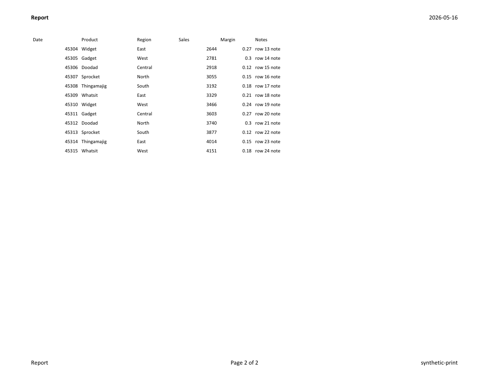
<rowBreaks> entry after row 13 forced the split here), body rows 14–25 (the print area stops at row 25 — rows 26–31 of the source are dropped, as Excel does), footer reads "Page 2 of 2".Fix: wire the XLSX → model → PDF pipeline that was missing end-to-end, in five phases.
src/Office.Formats/src/XlsxReader.fs: newPageMargins/PageSetup/PrintOptions/HeaderFootertypes.WorksheetgainsPageSetup,PageMargins,PrintOptions,HeaderFooter,RowBreaks,ColBreaks,PrintArea,PrintTitleRows,PrintTitleCols. New parsers for<pageSetup>,<pageMargins>,<printOptions>,<headerFooter>,<rowBreaks>,<colBreaks>, and thefitToPageflag on<sheetPr><pageSetUpPr>.NamedRanges.splitPrintNamespulls_xlnm.Print_Area/_xlnm.Print_Titlesout of the workbook's name list, groups them per sheet bylocalSheetId, and drops other_xlnm.*built-ins.src/Spreadsheet/Model.fs: newPageSetuprecord (page width / height in points, orientation, margins, fit-to-page, manual breaks, print area, repeat rows / cols, print options, header / footer).SpreadsheetModelgainsPageSetup(always present, defaulted to US Letter portrait with 0.75 inch margins).paperSizePointsmaps the OOXML paper-size codes (1 = Letter, 9 = A4, …) to point dimensions.tools/excel-native-runner/Program.fs:toModeltranslates the parsed Xlsx print fields into the model'sPageSetup— paper-size + orientation pick width / height (and swap for landscape), margins copy through, print area / title rows / title cols parse into 0-indexed ranges.src/Spreadsheet.Pdf/HeaderFooter.fs(new): Excel's&L/&C/&Rsection parser plus per-page field substitution (&Ppage number,&Ntotal pages,&Asheet name,&Ffile,&Zfile path,&Ddate,&Ttime,&&escape). Style-only codes (&Bbold,&"Font,Style",&NNsize,&K{hex}) are consumed silently. Pure string logic — no PDF deps — so it's liftable to a cross-document shared layer.src/Spreadsheet.Pdf/Pagination.fs(new): 2D page-break computation. Honors print area, margins, manual row / col breaks (which force closure regardless of accumulated size), fit-to-page scaling (measured againstFitToWidth×FitToHeightpages of available area), repeat rows / cols (steal space from every page, and the body range skips them so they don't render twice on page 1). Emits pages in Excel's "down then over" order.src/Spreadsheet.Pdf/Pdf.fs:translateItemtakes aPlacementrecord so margin offset, page height (for Y-flip), and fit-to-page scale bake into every coordinate uniformly.sliceItemsbuilds the paint items for one slice with chrome (column letters / row numbers) suppressed and degenerate zero-size chrome items filtered out. Each page composes body + repeat-rows band + repeat-cols band + repeat corner.sectionOpsemits header / footer in PDF coords directly (no scale, no Y-flip), placed in the top / bottom margin bands; their glyphs are recorded in the GID set before subset embed so embedded fonts include them.
- Focused guard: synthetic-print.xlsx committed under
tests/test-documents-excel/. The structural check is "2 landscape pages, repeat header on each, rows split at the manual break, footer reflects &P / &N / &A / &F field codes." A newtests/print/helpers.fsxexercises 14 standalone assertions for the field-code parser + 2D break math. - Regression guard: full 60-fixture corpus PNG render byte-clean (PageSetup defaults to portrait Letter, recalc unchanged); 177 formula + 14 print-helper + 12 calc-engine assertions still pass.
- Scope: page margins, orientation, manual row / col breaks, fit-to-page scaling, print area, repeat rows / cols, headers / footers with all common field codes. Historical note: this Phase 5 row originally left print headings, print gridlines, and even / first-page header/footer variants open; the print-chrome row above closes those items.
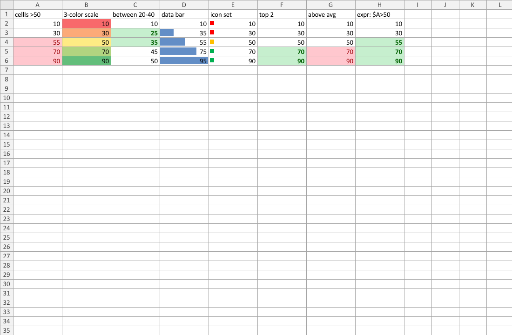
#FFC7CE fill + #9C0006 text). Col B — colorScale interpolates each cell across the 3 stops by position: 10→red … 50→yellow … 90→green. Col C — C3/C4 (25/35) get the dxf-1 overlay (#C6EFCE fill + bold #006100 text). Col D — a blue data bar from the left edge spanning the value's fraction of min..max. Col E — a red/amber/green icon square chosen by the value's third of the range. Col F — top-2 (70/90) get the green dxf. Col G — above the column mean of 50 (70/90) get the pink dxf. Col H — the expression rule =$A2>50 is shifted per row and evaluated by the formula engine; H4/H5/H6 match (A4/A5/A6 = 55/70/90 > 50) and get the green-bold dxf, even though the formula points at column A. Cells outside each rule's match stay plain.
expression rules were parsed into the model yet the runner's CF post-pass had no expression case, so the formula was never evaluated and the dxf never applied.Fix: wire the parser → model → evaluate → overlay path that was missing end-to-end, across two rounds (cellIs + colorScale first, then dataBar + iconSet).
src/Office.Formats/src/XlsxReader.fs:ConditionalFormatRulegainsOperator,Formulas(1 or 2 —betweenneeds two),DxfId,ColorScale(ordered<cfvo>+<color>stops),DataBarColor+DataBarCfvo, andIconSet+IconSetCfvo.parseRulereads them all.- New
Dxfrecord +parseDxfsreads the<dxfs>differential-format table from styles.xml — font color, fill (dxf fills conventionally use<bgColor>), bold/italic.WorkbookgainsDxfs: Dxf array; both loaders parse it.
Model.CellFormatgainsDataBar: (float * string) option(fillFraction, color) andIconSet: (int * int) option(iconIndex, iconCount) so the CF result rides the existing format pipeline.tools/excel-native-runner/Program.fstoModel: after the cell map is built, a CF post-pass walks every<conditionalFormatting>block.cellIsevaluates the operator against the cell's numeric value and overlays the referenced dxf.colorScaleinterpolates the 2- or 3-stop gradient by the cell's position in min..max.dataBarstamps the value's clamped fraction.iconSetresolves each cfvo threshold (percent/percentile onto the range, num literal) and picks the highest threshold the value clears.top10sorts the range and matches the n-th-largest cutoff (ties included; rank can be a count or a percentage).aboveAveragecompares to the range mean, optionally shifted by N·sigma.expressionparses the rule's single<formula>(anchored at the range's top-left), shifts its relative refs onto each target cell viaFormula.shiftExpr, evaluates it against the sheet model with the formula engine, and overlays the dxf wherever the result is truthy.sqrefranges are space-split; rules apply lowest-priority-first so the highest-precedence rule wins.src/Spreadsheet/Paint.fs: Pass 1b draws the data bar — a horizontalFillRectfrom the cell's left edge, inset 2 px vertically, under text. Pass 7 draws the icon-set indicator — a 9 px filled square in a red→amber→green ramp (the renderer has no icon artwork or circle primitive; the square carries the low/mid/high signal). Cell text indents past a 16 px icon gutter when an icon is present, matching Excel.- Latent fix surfaced by this work:
resolveColorElementreturned raw 8-char AARRGGBB, relying on each consumer to strip the alpha. The runner'scellFormatFromStyledid — but the new CF dxf path used the value directly, and the nativeparseHexColorreads an 8-char string as RRGGBBA (alpha last), mangling channels (pink#FFC7CErendered as washed-out yellow).resolveColorElementnow strips the leading alpha at the source so every consumer gets clean 6-char RRGGBB.
- Focused guard: synthetic-condformat.xlsx (8 columns) committed under
tests/test-documents-excel/. All seven rule kinds render the expected overlay / bar / icon. - Regression guard: 59-fixture corpus renders without error. The
resolveColorElementalpha-strip is a no-op for the runner's existing color paths (theirhexColorhelper already stripped 8-char input); poi-49156's indexed fills spot-checked unchanged. - Scope: cellIs / colorScale / dataBar / iconSet / top10 / aboveAverage / expression — all seven
cfRulekinds now evaluate. iconSet uses a colored-square approximation rather than Excel's icon artwork.
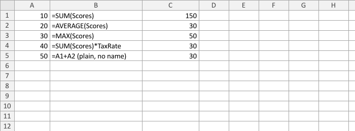
=SUM(Scores) → 150, C2 =AVERAGE(Scores) → 30, C3 =MAX(Scores) → 50, C4 =SUM(Scores)*TaxRate → 30 (150 × 0.2), C5 =A1+A2 → 30. The named range resolves through the workbook, the constant name TaxRate resolves too, and the plain uncalculated formula recalculates alongside them.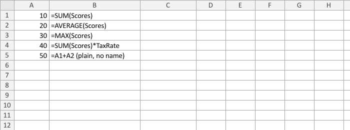
XlsxReader returned these cells as Formula(text, Empty) — correct — but the native runner never ran a calculation pass, so the cached value stayed Empty and the renderer drew nothing. Defined names were parsed into NamedRange records and then dropped: the Workbook had no storage for them and the formula engine returned #NAME? for every name.Fix: give the formula engine the workbook context it needs, then actually invoke it on load. Landed in two rounds — first global names + on-load recalc, then sheet-scoped names + dependency tracking via an EvalContext refactor.
src/Spreadsheet/Workbook.fs:WorkbookgainsNames, keyed by(SheetId option * name)— scope is the owning sheet for sheet-local names,Nonefor workbook-global.getNametakes the current sheet and tries the sheet-local entry before falling back to the global, so a sheet-local name shadows a global one of the same name.namesOfTriples/namesOfPairsbuild the map.src/Spreadsheet/Formula.fs: a newEvalContextrecord ({ Model; Workbook; Sheet }) threads througheval/evalFunction/flattenArgsin place of the old loose model+workbook pair, carrying the current sheet so names resolve at the right scope.resolveNameExprlooks a name up, parses its refers-to text as a formula, and follows name→name hops with a cycle guard (16-hop cap + visited set).eval'sNameRefcase resolves through it instead of returning#NAME?;flattenArgsresolves a name that stands in for a range soSUM(Scores)sees the whole range, not just its first cell.referencesInExpris now workbook-aware: aNameRefresolves to its target cells so the dependency tracker — and recalc ordering — account for=SUM(MyRange).tools/excel-native-runner/Program.fs: newbuildWorkbookContextassembles aRbt.Spreadsheet.Workbook— every sheet's model plus theNamesmap fromXlsxReader's parsedNamedRanges, mapping eachlocalSheetIdindex to its positional sheet id for scoping.renderSheetToPathpulls its sheet's model from that context and runsrecalculateAllFormulas(with that sheet as the scope) before painting, so uncalculated formulas — and their cross-sheet refs and named ranges — evaluate.
- Focused guard: synthetic-namedrange.xlsx committed under
tests/test-documents-excel/; the formula test harness gains 11 defined-name assertions (name→cell, case-insensitivity, name in expression, name→range in an aggregate, name→name chain, cycle, unknown name, plus sheet-local shadowing vs. global fallback). - Regression guard: 59-fixture corpus byte-identical — every corpus file ships cached values, so
recalculateAllFormulasonly touches genuinely uncalculated cells and is otherwise a no-op. - Scope: workbook-global and sheet-scoped defined names that refer to ranges, cells, or constants. The incremental
Calc.fsengine was subsequently re-keyed toSheetCell(sheet + cell) and now operates on a wholeWorkbook, so dependency edges — and dirty propagation — cross sheet boundaries: editingSheet1!A1dirties and recomputes aSheet2!B1 = Sheet1!A1 + 1.referencesQualifiedqualifies every ref (and everyNameReftarget) to an absolute(sheet, cell)pair for that graph.
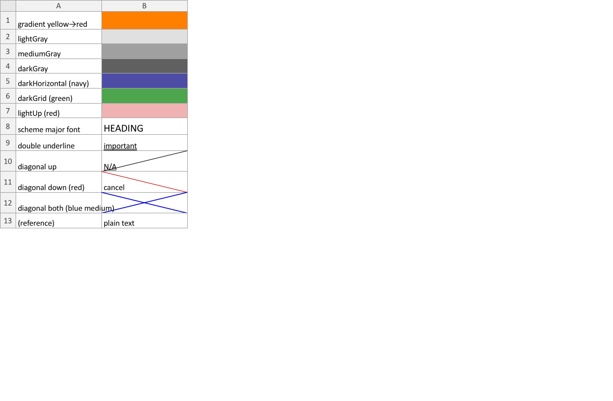

None). Rows 5-7 rendered as a flat solid of the raw fgColor — the pattern density was lost. Row 8 "HEADING" in default Calibri (scheme reference dropped). Row 9 single underline (the val="double" attribute was ignored). Rows 10-12 had no diagonal strokes at all — <diagonal> wasn't parsed.Fix: five independent additions to the style pipeline, batched behind one synthetic fixture.
- Gradient fills —
parseFillnow reads<gradientFill>'s ordered<stop>children. The renderer has no gradient primitive, soblendHexcollapses first + last stop to their 50% midpoint. A 2-stop yellow→red lands on orange — recognizable without a separate render path. - Pattern fills —
patternTypebeyond solid/none/gray125 no longer falls through as a plain fgColor solid. Named grays map to fixed tones; directional patterns (dark/light Horizontal/Vertical/Down/Up/Grid/Trellis) blend fgColor → field color by an empirical density (dark*≈ 0.7,light*≈ 0.3) so a sparse lightUp reads visibly lighter than a dense darkGrid. - Scheme fonts —
parseThemeFontsreads the theme<majorFont>/<minorFont>latin typeface.parseCellXfresolves a font with<scheme val="major|minor"/>and no explicit<name>to that typeface. Both workbook loaders thread the major/minor names down from theme1.xml. - Double underline —
<u val="double"/>(anddoubleAccounting) parsed into a newUnderlineDoublebool carried through RunProps → CellStyle → CellFormat → RunOverride → PaintText. Native + PDF renderers emit a second parallel stroke ~2 px below the first. - Diagonal borders —
<border diagonalUp diagonalDown><diagonal style color/>parsed intoBorderRecord.Diagonal/DiagonalUp/DiagonalDown→CellStyle→CellFormat. Paint.fs emits a top-left→bottom-right GridLine fordiagonalDownand bottom-left→top-right fordiagonalUp; both flags gives the X.
- Focused guard: synthetic-fmt5.xlsx committed under
tests/test-documents-excel/so the corpus runner picks it up. 13 rows, each rendering its labeled feature variant. - Regression guard:
parseFont's tuple widened from 7 to 9 elements (adds underlineDouble + scheme); all call sites updated. Fixtures with no gradient / pattern / scheme / double-underline / diagonal styling render byte-identical — each new path early-returns on the absent element. - Corpus guard: all 58 fixtures (53 + 5 synthetics) render without error.

1,234.56 / (1,234.56) / - for accounting +/-/zero, $ 1,234.56 for currency, 1.23E+08 for scientific, 1/2 + 1/3 for the two fraction codes, 0042 for zero-pad, 12% + 12.30% for percent variants.
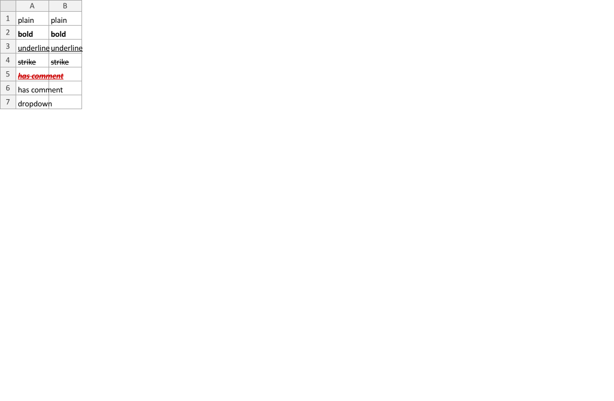
_(* 1,234.56_), -_(* (1,234.56), _(* -??_), _($* 1,234.56_), 1 ?/?, ??/??. Scientific / zero-pad / percent already worked.
Fix: six independent additions to the format pipeline, tied to one synthetic-fixture pair so each cue regression-guards against the others.
- Hyperlinks (
0263f78, color override in2260837): newHyperlinkrecord in XlsxReader, parsed from<hyperlinks>+ sheet rels (externalr:id→ URL, internallocationdirect). Runner builds a HashSet of hyperlinked cells and forcesTextColor = #0563C1+Underline = trueon each — unconditional override, since Excel's built-in Hyperlink cellStyle takes precedence over the cellXf's resolved theme-1 color. - Comment markers (
4804f0d):CellFormat.HasCommentflag, set by the runner when a cell is insheet.Comments. The native loader now follows the/comments-typed sheet rel toxl/commentsN.xml(the prior code passed[]for comments). Paint.fs Pass 5 emits a 5-px right-isoceles in #C00000 in the top-right corner — same horizontal-strokes trick as the filter-button triangle, since the renderer has no fill-polygon primitive. - List-validation dropdowns (
4804f0d):CellFormat.HasListDropdownflag, set for any cell inside a<dataValidation type="list">range. Paint.fs Pass 6 emits the same 7×4 px triangle the filter button uses, in gray (#666666). Excel only shows the arrow on selection in the live UI; we always show it so the cue carries through to static PNG / PDF snapshots. - Inline strings (
3e6ca61): XlsxReader'scellValuegains aninlineStrcase that pulls text out of<is>/<t>; falls back to<is>even when the cell omits the explicitt="inlineStr"attribute. POI, OpenXmlSdk's row-streaming writer, and most SQL-export-style writers emit inline-string cells. - Number format placeholders (
747378e): three coordinated tweaks informatExcelNumber:stripExcelWidthPlaceholderscollapses Excel's column-width grammar to a .NET-friendly subset:_X→ space,*X→ X,?→#(digit-or-nothing) — all outside quoted literal segments. Without this an accounting cell like_(* #,##0.00_)printed as_(* 1,234.56_)literally.tryFormatFractionhandles?/?and??/??by searching Stern-Brocot-style for the closest reduced fraction with denominator ≤10^digits. Without it Excel's fraction codes printed the raw?s.- When the selected section is non-positive (negatives, zero), format the *absolute* value — Excel's section grammar already encodes the sign visually (
(#,##0.00)for negatives), and .NET was prepending an extra-. Strip[$-XXX]locale tags and bracketed color tags out of the cleaned code so they don't print as literals.
- Focused guard: synthetic-formatting and synthetic-numfmt are committed under
tests/test-documents-excel/so the corpus runner picks them up. Each cell renders the intended cue. - Regression guard: 53-fixture corpus byte-identical for fixtures that didn't use any of these features (no
<hyperlinks>, no comments, no list validation, no inline strings, no accounting / fraction / locale format codes). Number-format codes that already worked — General, simple0.000, dates — flow through their existing paths unchanged. - Corpus guard: all 55 fixtures (53 + 2 synthetics) still render without error.

0.98026851 (8 sig digits, 10 chars), col C = 3.68573088 (9 sig digits, 10 chars), col D = -0.3642168, col E = -1.1597381. Cell font Calibri 11, column sized to baseColWidth=10 against the workbook default Calibri 12 (MDW = 8).
0.98026851 / 3.68573088 / -0.3642168 / -1.1597381. MDW now floors instead of ceils (Calibri 11 = 7 not 8, Calibri 12 = 8 not 9, etc.) and General-format reserves one extra MDW char of right buffer so the trim ladder lands on Excel's effective digit count.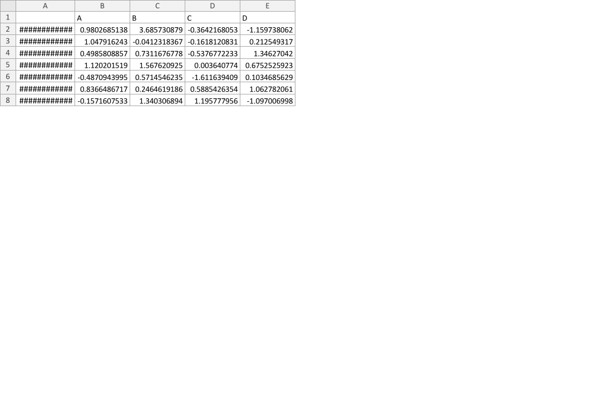
0.9802685138 (10 sig digits, 12 chars), col C = 3.685730879, col D = -0.36421681, etc. The cell font's MDW (Calibri 11 = 7) made maxChars = (cellWidth-8)/7 = 11, enough for G10 to fit even though the column was sized against the default font's MDW (Calibri 12 = 8) at 88 px and Excel would only have used 10 chars worth of digits.Fix: two coordinated changes so the trim aligns with what Excel displays in the same column.
tools/excel-native-runner/Program.fs: switch the per-workbook MDW measurement fromMath.CeilingtoMath.Floor. Microsoft's documented MDW table at 96 DPI floors the measured "0" advance: Calibri 11 = 7 (measured 7.43), Calibri 12 = 8 (measured 8.11), Arial 10 = 7 (measured 7.42), Verdana 10 = 8 (measured 8.48). Ceiling pushed Calibri 11 to 8 — a ~22 px-per-column inflation that propagated through every default-width column. The 7-px floor stays as a safety net for very small fonts.src/Spreadsheet/Paint.fsgeneralNumberDisplay: reserve one extramdwPx fontPtchar of right buffer on top of the existing 4 px-per-side text inset. Also widen the candidate Gn ladder from[G10; G8; G6; …]to[G11; G10; G9; G8; G7; …]so the trim can land on 9 or 7 sig digits when Excel does — without this the trim jumps straight from G10 to G8 and skips Excel's intermediate values.
- Focused guard: pandas-test1 rows 2-8 across cols B-E now match the Excel reference within rounding (full audit reproduced 8/8 cells).
- Regression guard: poi-47813 (Verdana 10 baseline, MDW already floored to 8), pandas-test_decimal (TableStyleMedium2, explicit number format), pandas-test_types (mixed types, explicit formats), and every fixture whose values use a number format other than General all unchanged. Cells whose values have ≤ 8 sig digits to begin with (most pandas exports) get the same render as before.
- Corpus guard: all 53 fixtures still render without error.
artifacts/excel/ for this fixture (pandas test asset). Verification is structural: <pane xSplit="1" ySplit="3"/> in the sheetView puts the split between cols A/B and rows 3/4, and the darker divider line in the "After" panel lands at exactly those edges.buildFreezeDividerItems emits one horizontal + one vertical GridLine at the freeze split (HeaderHeight/RowHeaderWidth offsets baked in so the line lands flush with cellRect coordinates).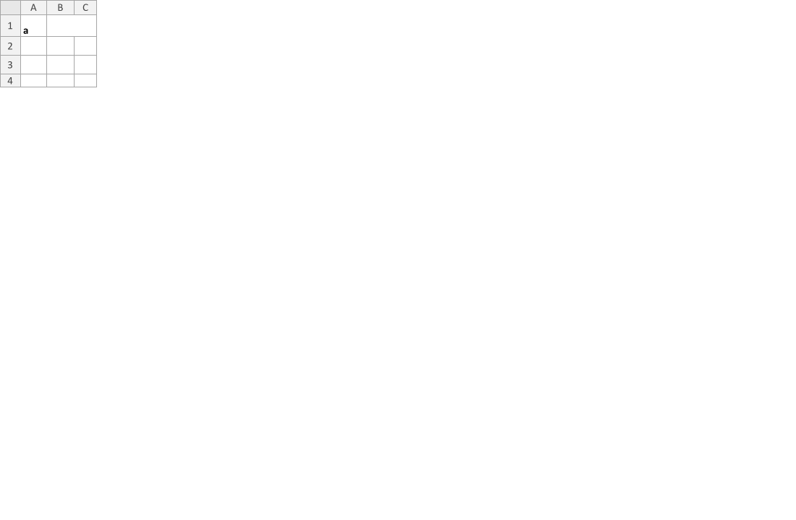
Fix: end-to-end frozen-pane wiring covering parsing, static render, and interactive scroll/hit-test.
src/Office.Formats/src/XlsxReader.fs: newFrozenPanerecord on Worksheet, populated byfrozenPane sheetreadingsheetView/pane. Only triggers onstate="frozen"orstate="frozenSplit"— plain "split" puts a draggable bar in instead and we'd render it wrong.src/Spreadsheet/Model.fs:SpreadsheetModelgainsFrozenRows/FrozenCols(zero = no freeze).src/Spreadsheet/Layout.fs:ViewportZonegainsFrozenRowsZone,FrozenColsZone,FrozenCornerZone;toViewportRectdrops the pinned axis for each.zoneForCellmaps (row, col) to a zone.viewportClipFor model viewport zonederives band-specific clip rects (BodyZone clips past the split; the frozen zones clip the bands themselves).src/Spreadsheet/Paint.fs:buildCellPaintItemsnow returns(ViewportZone * PaintItem) listso each cell's items carry its zone.buildPaintItems(PNG/PDF path) ignores the tag — at ScrollX/Y=0 every zone paints at absolute position.buildFreezeDividerItemsemits the divider strokes.buildViewportPaintItemsthreads the zone into eachViewportPaintItem.src/Spreadsheet/Spreadsheet.fsrenderCell: for cells in a frozen band, addscrollTop/scrollLeftto absolutetop/leftso the browser's native scroll cancels out and the cell stays visually pinned. Frozen cells get a higherz-indexso body cells slide under them.hitTesttests each cell against its zone's own translation — without this, clicks on a frozen band would hit the body cell underneath at the current scroll position.
- Focused guard: pandas-df_header_oob shows the divider at (col A | col B) and (row 3 | row 4) split. poi-47813 / pandas-df_empty / df_equals / df_mangle show the ySplit=1 horizontal-only divider below row 1.
- Regression guard: fixtures with no frozen pane render byte-identical to before —
buildFreezeDividerItemsearly-returns when FrozenRows = FrozenCols = 0.buildCellPaintItems's static path strips zones, so non-zoned callers see the same item sequence as before. - Corpus guard: all 53 fixtures still render without error.
indexed=, theme= + tint= color attributes (cells, fonts, borders)
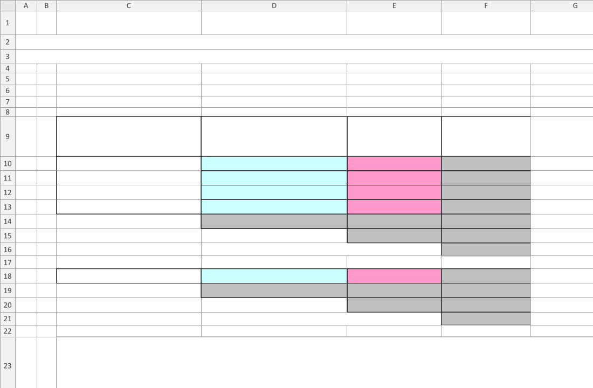
#C0C0C0 (light gray), index 41 = #CCFFFF (cyan), index 45 = #FF99CC (pink), 43 = #FFFF99. Compare to the OOXML transitional spec's IndexedColors table.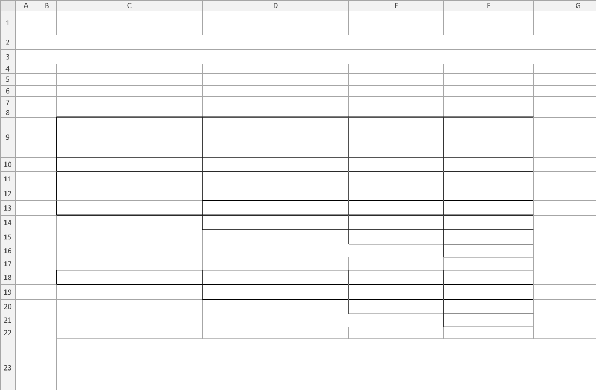
<fgColor indexed="N"/> hit Xml.attr "rgb" in parseFill, returned None, so all fill colors dropped to default white. The structural borders are still visible because parseBorderSide reads style= which doesn't depend on color resolution.Fix: add a generalized color element resolver and route every color path (font, fill, border) through it.
src/Office.Formats/src/XlsxReader.fs:resolveColorElement themeColors nodetriesrgb→theme(+ optionaltint) →indexedin that order, returning the first hit as a 6-char hex.parseThemeColorsreads all 12 slots of the theme<a:clrScheme>in XLSXtheme="N"integer order — note that OOXML swapsdk1/lt1(anddk2/lt2) between the theme XML element order and the theme-N value space. Without all 12,theme="0"(background) andtheme="1"(text) would silently fall back to defaults.parseThemeAccentsstays as a 6-entry array for the existing TableStyleMedium# overlay code that indexes accent1..accent6.indexedPaletteColor iencodes Excel 8 / BIFF8's 64-slot legacy palette as a static table, plus indices 64 (system fg → black) and 65 (system bg → white).applyColorTint rgb tintimplements the OOXML formula: convert RGB → HLS, adjust L byL * (1 + tint)when tint < 0 elseL * (1 - tint) + tint, convert back. Tint = -0.5 darkens by ~half, tint = +0.5 lightens.parseFont,parseFill,parseBorderSide,parseBorder,parseStylesall takethemeColors: string arraythreaded down from the workbook loader.parseFilladditionally treatspatternType="none"andpatternType="gray125"(openpyxl's no-fill sentinel) as explicit None, and falls back tobgColorwhenfgColoris absent — POI-written workbooks sometimes only setbgColorfor the solid case.
- Workbook loader (
parseWorkbookNativeand the Promise-basedparseWorkbook) readsxl/theme/theme1.xmlfirst, derivesthemeColorswith Office 2013 defaults as fallback, then passes it intoparseStylesso every color element has a resolution context.
- Focused guard: poi-49156 banded rows now show the 4-color form palette (cyan/pink/light-gray on a white base). poi-51710 column-A and row-2 darker gray now matches the Excel reference's header band rather than blending into the body.
- Regression guard: every fixture that was already using
rgb=colors keeps the exact same hex value (resolveColorElement triesrgbfirst); pandas* fixtures, phpsp-26template, the table fixtures all produce byte-identical PNGs. - Corpus guard: all 53 fixtures still render without error.
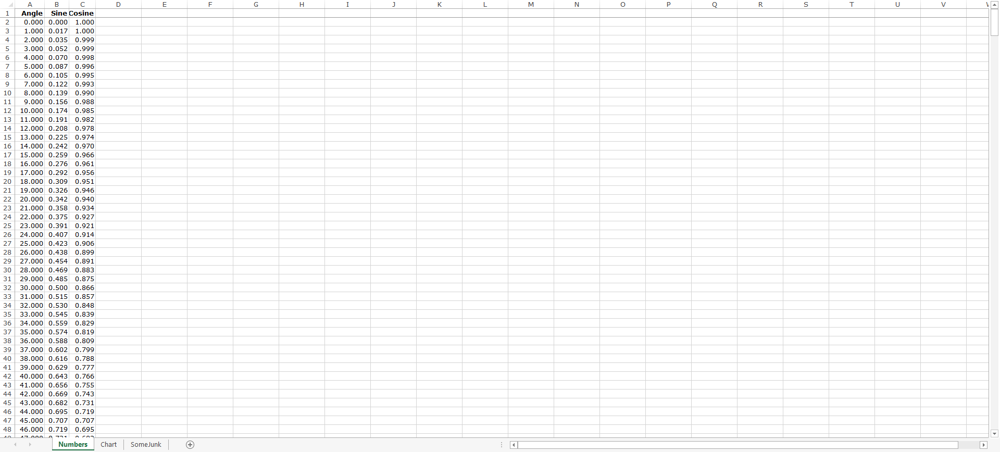

tools/excel-native-runner loads the workbook's default font via SpreadsheetGrid.rendererFontFor and measures Renderer.Text.measureWidth font pxSize "0", then ceils. For Verdana 10 (winAscent-anchored) that lands at 8 px. Combined with the new Verdana faces in the font cache, col A now fits "47.000" cleanly.
round(10 × 7/11) = 6 clamped to floor 7 — close to Calibri's '0' but not Verdana's. Col A clamped to 50 px instead of 57 px; numbers ≥ 10 overflow → #####. Verdana itself also wasn't recognized, so text fell back to Calibri (giving the cells a thinner look than Excel).Fix: three coordinated changes so the renderer/runner can measure with the actual font.
tools/word-parity/fetch-windows-fonts.sh: addverdana.ttf,verdanab.ttf,verdanai.ttf,verdanaz.ttfto the fetch set. Pull the same files Excel renders with.spreadsheet-native/SpreadsheetGrid.fs:familyKeyrecognizes names starting with "verdana";fontFilesreturns the matching variant chain. ExposerendererFontForas a public wrapper so the runner can resolve fonts through the same family map + cache as the renderer.tools/excel-native-runner/Program.fs: intoModel, load the workbook's default font (Styles.[0].FontName) viarendererFontFor, then derive MDW fromceil (measureWidth font pxSize "0")floored at 7. Falls back to the prior linear estimate when the font load throws.
- Focused guard: poi-47813 col A width 50 → 57 px (Excel: 57). All 47 angle values render cleanly. Col B similar (Sine column now fits 0.NNN values).
- Regression guard: every Calibri/Arial fixture still resolves MDW = 7 (or 8 at size 12+) via the same measurement, matching Excel's per-font MDW table. pandas-test1, pandas-testmultiindex etc. produce pixel-identical PNGs.
- Corpus guard: all 53 fixtures still render without error.
vertical="top" → bottom on default-height rows (Excel quirk)
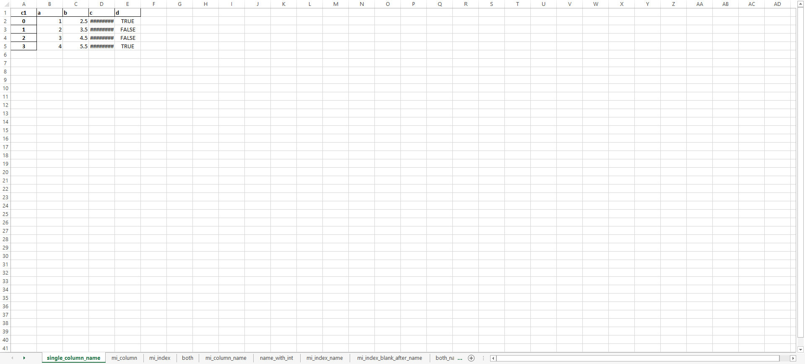
y = 25 in a cell spanning y = 20..39 — 5 px below cell top, 4 px above bottom. Excel ignores the vertical="top" hint because the 19-px row is barely taller than the Calibri 11 line height (winLineHeight ≈ 17.9 px).
toRendererCommands computes the cell's vertical slack (cell.Height − winLineHeight × lineCount); when vAlign is top AND slack is less than half a line height, collapse to bottom. Row 1 cap now lands at y = 26 (Excel's y = 25 within 1 px floor diff). Tall wrap-text cells (phpsp-26template row 4/5) still respect the top hint because they have plenty of slack.y = 21 — 1 px below cell top because vAlign=top placed the em-top at cell.top. Visually obvious as header text glued against the top border, ~4 px higher than Excel.Fix: mirror Excel's "default-height rows ignore the top hint" behavior at the renderer.
spreadsheet-native/SpreadsheetGrid.fsintoRendererCommands: computeslack = text.Rect.Height − blockHeightwhereblockHeight = winLineHeight × LineCount. IfVerticalAlign = VAlignTop && slack < winLineHeight × 0.5, fall back toVAlignBottomfor the block positioning. Everything else (top-anchored multi-line wrap, explicit center/middle, default General) flows through the same vAlign DU as before.- Threshold tuning: 0.5 × line height is the visual "alignment matters" cutoff. Below that, top/bottom converge to within 1 px of each other anyway; above it, Excel respects the hint and so do we (verified with phpsp-26template's tall wrap-text cells).
- Focused guard: pandas-testmultiindex row 1 "c1"/"a"/"b"/"c"/"d" cap now lands at the same y-position as Excel (1 px floor diff). pandas-test_index_name_pre17, multiindex_no_index_names, and every other pandas fixture see the same correction on their header rows.
- Regression guard: cells with
vAlign = bottomor no explicit alignment go through the existing path unchanged. Tall rows (e.g. phpsp-26template row 4 height = 36 px) keep top-anchored placement when the hint is set. - Corpus guard: all 53 fixtures still render without error.
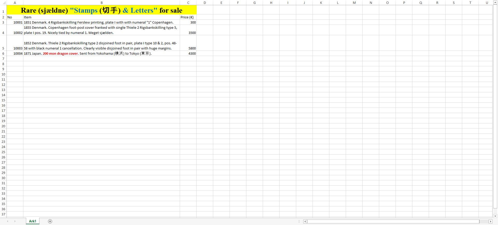

SpreadsheetGrid.toRendererCommands walks the text codepoint-by-codepoint, asks the primary font (via Renderer.Text.hasGlyph) whether it covers each one, and switches to the first fallback that does. The native measurer goes through the same primary-then-fallback walk via segmentByFontCoverage so a Times run containing kanji doesn't return a too-small width and let the next rich-text run overlap the trailing space. Baseline stays anchored to the primary font's winAscent so mixed-script lines don't jitter vertically.
.notdef) in Calibri's cmap, which the shaper rendered as a tofu box. Row 1's "(□□)" in place of "(切手)"; row 6's "(□□)" for both 横浜 and 東京.Fix: fetch the same fonts Excel/GDI uses for fallback, plus three small renderer changes so they load and split correctly.
tools/word-parity/fetch-windows-fonts.sh: pullYuGothR.ttc/YuGothB.ttc(Japanese),msyh.ttc/msyhbd.ttc(Simplified Chinese),msjh.ttc/msjhbd.ttc(Traditional),malgun.ttf/malgunbd.ttf(Korean), plusmsgothic.ttcas the legacy Japanese fallback. Skip-with-warning when a font is missing on the VM image instead of aborting.shaper/Shaper.fs:parseFontnow handles TTC (TrueType Collection) files by detecting the"ttcf"prefix and reading font 0's offset from byte 12. Previously it blindly read byte 4 as the table count, which crashed on every.ttcwe wanted to load. SplitparseTableDirectoryintoparseTableDirectoryAt(data, sfntStart)so the TTC branch can re-anchor.renderer/Text.fs:hasGlyph font codepoint— one-line wrapper aroundCmapLookup.lookup ≠ 0. Used by font-fallback logic to decide whether to keep the primary font or switch.spreadsheet-native/SpreadsheetGrid.fs:cjkFallbackChain boldreturns the GDI-style chain (Yu Gothic → MS Gothic → YaHei → JhengHei → Malgun for regular; bold variants for bold cells).fallbackFontFor codepoint boldpicks the first chain font whose cmap covers the codepoint, with a per-filename cache so a 13 MB Yu Gothic TTC loads at most once.toRendererCommandswalks the text codepoint-by-codepoint (folding surrogate pairs), partitions into contiguous segments by which font wins, measures each segment with its own font, and emits oneCmd.DrawGlyphsper segment. Baseline stays anchored to the PRIMARY font'swinAscent— mixing Yu Gothic's larger ascent in would shift the baseline ~3 px vs Excel.segmentByFontCoveragelifts the same primary→fallback walk someasureText(used by Paint.fs's rich-text cursor) sums per-segment widths instead of probing just the primary font. Without this, a Times rich-text run containing kanji measures as ~Latin-chars-only width, and the next run's start gets parked on top of the trailing space — visible in row 1 as(切手)& Lettersinstead of(切手) & Letters.
- Focused guard: phpsp-26template's 切手, 横浜, 東京 all render as the correct glyphs, and the space between run 3 (
" (切手) "in black) and run 4 ("& Letters"in blue) survives. - Regression guard: cells whose text is fully Latin take the single-segment path with the primary font — same Cmd.DrawGlyphs output and same measurer width as before. Per-run rich text (previous row) still works because the segmentation runs inside each per-run DrawText.
- Corpus guard: all 53 fixtures still render without error. Font load is cached, so repeated CJK cells don't re-pay the TTC parse.
- Path guard: native PNG and PDF emitter. The PDF path picked up the same fallback chain (with subset-embed to keep file size sane) in a later commit; Fable web canvas relies on the browser's own font-linking and was never broken to begin with.
<r> elements
<r> carries its own <rPr> (rFont, sz, b, color rgb).
Workbook.SharedStringRuns carries parsed run lists parallel to the existing SharedStrings text array. SpreadsheetModel.RichRuns indexes the runs by cell address (sparse — only cells with >1 run). Paint.fs pass 3, on a one-line cell with rich runs, emits one DrawText per run positioned along x using the same Viewport.Measurer the wrap path uses. The blue Stamps span and the bold-red "200 mon dragon cover" now match Excel. (CJK glyphs render as boxes — separate font-fallback gap.)
<si> went through List.choose Xml.text on all descendant <t> elements, returning a single plain-text string. The cell's base format (font, color, bold) applied uniformly — so the yellow row 1 looked monochrome black, and row 6's "200 mon dragon cover" lost both its bold and red.Fix: parse runs at the SST layer, propagate them through to the renderer.
src/Office.Formats/src/XlsxReader.fs: addRunProps { Bold; Italic; Color; FontName; FontSize }andSharedStringEntry { Text; Runs }.sharedStringswalks<si>children: when an<r>is present, parse its<rPr>(b,i,color rgb,rFont,sz) intoRunPropsand yield(text, props).WorkbookgainsSharedStringRuns: (string * RunProps) list arrayparallel toSharedStrings: string array(same length, empty list for plain entries).src/Spreadsheet/Model.fs:RunOverriderecord (all-optional mirror ofRunProps).SpreadsheetModelgainsRichRuns: Map<CellAddress, (string * RunOverride) list>— sparse, only populated for cells whose SST entry has more than one run.tools/excel-native-runner/Program.fs:cellRichRunsmapsRunProps→RunOverride(color: ARGB →#RRGGBB, bool fields drop to None when false so the cell's base format wins).toModelaccumulates a per-address map and stashes it inmodel.RichRuns.src/Spreadsheet/Paint.fspass 3: on a one-line cell with rich runs and a measurer available, measure each run with its effective(fontName, bold, italic, size), compute total width for alignment, and emit oneDrawTextper run at the running x cursor. Each run carries its own per-run font/color overrides, withAlign = AlignLeft(positions are pre-computed).
- Focused guard: phpsp-26template row 1 yellow header now has the blue "Stamps (…) & Letters" segment. Row 6 "200 mon dragon cover" renders bold red on a black-text run.
- Regression guard: cells with single-run SST entries (the vast majority) go through the plain-text path — same DrawText output as before.
- Known limitation: multi-line wrap with per-run formatting still falls back to plain rendering. Adding it requires chunking each wrapped line back to its source runs.
- Corpus guard: all 53 fixtures still render without error.
charCount × mdwPx
Viewport gains Measurer: TextMeasurer option. Native runner sets it to a closure that runs Renderer.Text.measureWidth against the real loaded font for the cell's (fontName, bold, italic) triple. Paint.wrapLines consults the measurer for both word-fit and char-fit decisions when present. Rows 4 and 5 now wrap at the same word boundaries Excel does.
Fix: add an optional real-font measurer to the layout context and consult it in wrapLines.
src/Spreadsheet/Layout.fs: newTextMeasurer = string → float → string option → bool → bool → floatalias plusMeasurer: TextMeasurer optiononViewport.defaultViewportsets it None.spreadsheet-native/SpreadsheetGrid.fs: definemeasureTextasrendererFont fontName bold italic |> Renderer.Text.measureWidth pxSizeand passSome measureTextinviewportOf. Same renderer the PNG path uses, so wrap and draw stay in sync.src/Spreadsheet/Paint.fs:wrapLinestakesmeasure: (string → float) option.fitsuses the measurer when present, falls back tocharCount ≤ mdwPx-budgetotherwise. Char-by-char break for oversized words also routes throughfitsso the worst case (a single long word) still respects real metrics.- Other call sites (
src/Spreadsheet/Spreadsheet.fsFable canvas;src/Spreadsheet.Pdf/Pdf.fsPDF emitter): setMeasurer = None. They'll wrap with mdwPx until a measurer is wired there; not a regression since they used the same heuristic before.
- Focused guard: phpsp-26template row 4/5 wrap points now match the Excel reference at word level.
- Regression guard: cells without WrapText (the vast majority) are unaffected. Cells with WrapText in fonts where mdwPx and real-width happen to align (e.g. monospaced) still wrap identically.
- Corpus guard: all 53 fixtures still render without error.

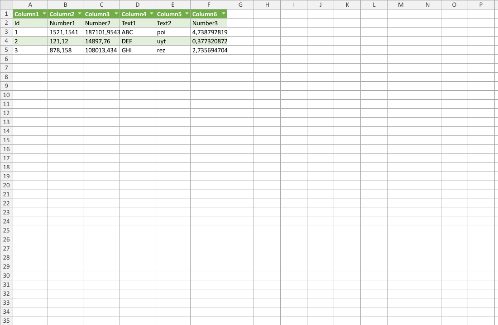
TableDefinition.AutoFilter stores the parsed range. tableOverrideFor flags header cells in the range with FilterButton = true. buildCellPaintItems pass 4 emits five horizontal GridLine commands forming a centered 7×4 triangle, color = format.TextColor (white on green). Visible on Column1..Column6 — same shape, position, and color as Excel.
Fix: add <autoFilter> parsing + a filter-button flag on cell format, then draw the triangle.
src/Office.Formats/src/XlsxReader.fs: addAutoFilter: (int * int) optiontoTableDefinition.parseTablereadssElem "autoFilter" doc, parses therefattribute through the existingparseRange, and stores just the column span (rows are implicit — the header is always atStartRow).src/Spreadsheet/Model.fs:CellFormatgainsFilterButton: bool. Default false ondefaultFormat; all other CellFormat constructors (XlsxImporter.convertCellFormat, native runner'scellFormatFromStyle) initialize it to false.tools/excel-native-runner/Program.fs:TableOverlaygainsFilterButton: bool.tableOverrideForsets it true for header cells whose column falls int.AutoFilter. The format-merge step ORs the overlay flag intobaseFormat.FilterButton.src/Spreadsheet/Paint.fs: new pass 4 inbuildCellPaintItems. For each cell withformat.FilterButton: compute a 16-px-wide right-edge button area; emit 4 horizontalGridLinestrokes forming a centered downward triangle. Stroke color isformat.TextColorso the white-on-green triangle matches the header text. No newPaintItemcase needed.
- Focused guard: pandas-test_decimal now shows six ▼ triangles, one per header cell in A1:F1.
- Regression guard: tables without
<autoFilter>(e.g.HeaderRowCount = 0tables, or non-pandas writers) getFilterButton = falseon every cell — render unchanged. - Corpus guard: all 53 fixtures still render without error.
- Path guard: native PNG only. PDF emitter ignores
FilterButton(no draw command emitted for it there yet); Fable web canvas does the same. PDF/web parity is a follow-up.
y = 48..57 with cell bottom at y = 62 — 5 px of descender room. Excel anchors the baseline using winAscent below the em-top of the line block, so baseline = cellBottom − winDescent_px = 62 − 4.30 = 57.7.
y = 49..58 (1 px floor diff vs Excel). toRendererCommands computes baseline = blockTopY + i × winLineHeight + winAscent with blockTopY anchored per VerticalAlign (top = cell.top, bottom = cell.bottom − blockHeight). For Calibri 12 (winAscent = 1950, winDescent = 550, em = 2048) and a 20-px row, this puts the descender flush with the cell floor.
y = 52..60 — only 2 px of descender room. The old formula was baseline = rect.Y + (rect.Height + pxSize)/2 − 2.0, equivalent to "center a pxSize-tall block in the rect, then nudge up 2 px." It under-counted descender room by ~3 px for Calibri 12 because the magic 2 wasn't actually winDescent_px.Fix: three-repo refactor that replaces the heuristic with real font metrics end-to-end.
renderer/Text.fs: addwinAscent/winDescent/winLineHeighthelpers next to the existing hhea-basedascender/descender/lineHeight. They read OS/2usWinAscent/usWinDescent(the Windows GDI box-layout metrics — larger than hhea because they include diacritical headroom). IfOS/2.fsSelectionbit 7 (USE_TYPO_METRICS) is set, honor the font's preference for typo metrics instead. Falls back to hhea when OS/2 is absent.pdf/FsPdf.fs: parseOS/2 usWinAscent(offset +74) andusWinDescent(offset +76) intoTrueTypeFontnext to the existing hhea fields. PDF can now do the same baseline math the PNG renderer does.src/Spreadsheet/Paint.fs:PaintTextnow carriesVerticalAlign(DU: top / middle / bottom),LineIndex,LineCount.buildCellPaintItemsemits one DrawText per wrapped line with the full cell rect, no synthetic per-line Y packing. Excel "General" (no explicit alignment) →VAlignBottom.spreadsheet-native/SpreadsheetGrid.fs+src/Spreadsheet.Pdf/Pdf.fs:baseline = blockTopY + lineIndex × winLineHeight + winAscent, withblockTopYset per vAlign so bottom = "em-bottom of last line at cell.bottom", top = "em-top of first line at cell.top", middle = block centered.src/Spreadsheet/Spreadsheet.fs(Fable web canvas): switchtextBaselinefrom'middle'to'alphabetic'; pass the explicit baseline. Use Calibri's approximate em-relative ratios (winAscent 0.952, winLineHeight 1.221) since browser canvas doesn't expose font metrics portably.
- Focused guard: pandas-test1 B2 baseline within 1 px floor diff vs Excel (was ~3 px too low pre-fix). pandas-testmultiindex B2 "1" digit at
y = 46..55vs Excely = 46..54(1 px). phpsp-26template multi-line cells stride correctly withwinLineHeight. - Regression guard: all 53 corpus fixtures still render without error. Headers (column/row strip) now explicitly request
VAlignMiddleand render unchanged. - Policy: default to
winAscent/winDescentfor Office parity. If the font setsfsSelection.USE_TYPO_METRICS(e.g. Inter, Roboto — fonts that want cross-platform consistency), honor that instead. Falls back to hhea only when OS/2 is missing entirely.
y = 6..15 (10 px cap height — matches Calibri 11 pt × 96/72 dpi). Cell B2 "0.98026851" runs x = 133..207 (75 px wide × 10 px tall).
toRendererCommands now multiplies text.FontSize by 96/72 before calling Renderer.Text.layout. Column-header "B" glyph occupies y = 6..15, cell B2 number runs x = 136..205 (70 px wide × 11 px tall). All glyphs sit at the same source-pixel positions as Excel within ±1 px, so the cell-by-cell overlay in this tracker actually shows like-for-like text.
FontSize reached the renderer as-is, so "11" got interpreted as 11 px of em-square instead of 11 pt = 14.67 px. Column-header "B" glyph was only 8 px tall (vs Excel's 10), cell B2 number ran 52 px × 7 px (vs Excel's 75 × 10). Every glyph rendered ~75% the size Excel showed — fine in isolation, useless for overlay comparison.Fix: in spreadsheet-native/SpreadsheetGrid.fs's toRendererCommands, compute pxSize = text.FontSize * 96.0 / 72.0 and feed that to both Renderer.Text.layout / measureWidth and the baseline math. Row/column heights were already pt→px-converted (h * 96/72) inside tools/excel-native-runner; this brings text into the same coordinate system.
Companion change to the font lookup: tools/excel-native-runner's findFont now also checks ../office/artifacts/fonts/windows/ (matching SpreadsheetGrid.fontDirs) and stderr-warns if calibri.ttf can't be found. The runner's Composit.Ui.Layout.initFont path was previously silent on miss → fell back to NotoSans for any chrome that went through the Composit font path. Cell rendering already used Calibri via SpreadsheetGrid.loadVariant; this just makes the runner-level font init consistent.
- Focused guard: pandas-test1 column-header glyph height 8 → 10 px; cell B2 number width 52 → 70 px (vs Excel 75 px — remaining 5 px is digit-spacing hinting jitter, not font size).
- Regression guard: all 53 corpus fixtures still render without error after pt→px. Native-runner unit conversion (pt → px) now applies consistently to row heights, column widths, and text.
- Path guard: native PNG only. The Fable web app already renders fontSize via CSS
font-size: …pt, which the browser converts automatically — no change needed there.
defaultColWidth="8.85546875" + Calibri 11 → 62 px per column (column boundaries at source x = 25, 87, 149, 211, 273, …). Column-header strip is 20 px tall; row 1 starts at y = 20.
charsToPixels reads the workbook's default FontSize (workbook.Styles.[0]) and derives MDW = round(size × 7/11) — 7 for size 11, 8 for size 12. Pandas-testmultiindex columns now render at 62 px (boundaries at source x = 27, 89, 151, 213, 275, …) and row 1 starts at y = 20. With the parity HTML and Excel screenshot sharing the same per-row --s scale, cells now occupy the same on-page rectangle in both columns.
chars * 8.0, so size-11 columns rendered at 8.85546875 × 8 ≈ 71 px (boundaries at source x = 27, 98, 169, 240, 311, …) — ~14% wider than Excel. The header strip was 18 px, so row 1 started at y = 18 while Excel's started at y = 20; the 2-px drift compounded with the column drift to misalign every cell when the two PNGs were overlaid in the parity tracker.Fix: two coordinated changes that together make Excel screenshots and our native render share the same source-pixel grid.
tools/excel-native-runner/Program.fs: readworkbook.Styles.[0].FontSize(defaults to 11) and derivemdw = max 1.0 (round(size × 7.0 / 11.0)).charsToPixelsuses this per-workbook MDW instead of a literal 8.0. Calibri 11 sheets get 7 px/char, Calibri 12 sheets stay at 8 px/char.spreadsheet-native/SpreadsheetGrid.fs: bumpheaderHeightfrom 18 → 20 px to match the Excel pane capture (measured with a horizontal-line scan: the first row of dark pixels that spans the full pane is aty = 20).
- Focused guard:
pandas-testmultiindex.xlsxdefault columns drop from 71 px to 62 px; A1 anchor moves from(28, 18)to(28, 20), identical to Excel. - Regression guard:
pandas-test1.xlsx(Calibri 12 → MDW 8) keeps its 88-px default columns and 95-px column A — no change vs the previouschars * 8behavior. - Corpus guard: all 53 fixtures still render without error after the MDW change.
<border> from cellXf borderId
borderId=1 → <border> with <top/><bottom/><left/><right style="thin"/>).
parseBorder reads each side's style + <color>; parseCellXf indexes into the borders array via borderId; cellFormatFromStyle maps to BorderStyle option; buildCellPaintItems emits GridLine commands per side at a stroke width chosen by the OOXML style (thin → 1.0 px, medium → 1.5 px, thick → 2.5 px).
parseStyles ignored the <borders> block entirely. The cell paint pipeline only drew the default #a6a6a6 gridline, so the rendered table looked faint compared to Excel's strong cell grid.Fix: end-to-end border plumbing. src/Office.Formats/src/XlsxReader.fs: add CellBorderSide + BorderRecord, parse the <borders> block, extend CellStyle with BorderTop/BorderBottom/BorderLeft/BorderRight, and have parseCellXf look up the cellXf's borderId. tools/excel-native-runner/Program.fs: forward the four sides through cellFormatFromStyle. src/Spreadsheet/Paint.fs: per-cell GridLine emits for whichever sides are set, with borderStrokeWidth mapping OOXML style names to stroke widths.
- Focused guard:
pandas-testmultiindex.xlsxnow renders the dark cell grid that Excel shows. - Regression guard: cells with
borderId=0(no border) still get just the default#a6a6a6gridline. - Corpus guard: all 53 fixtures still render without error.
<col min..max> width across the full range

<col min="4" max="7" width="5.41"/> entry; the table stays compact (~340 px total).
columnInfo records both min and max; the runner fans the same width into every column in the range. Cols D–G now share the 43-px width and the table footprint matches Excel.
min) got the 5.41-char width; cols E / F / G fell back to the 8.43-char sheet default (≈ 67 px each), so the right-hand block widened by ~70 px and broke the spacing of the merged headers above.Fix: add MaxIndex to Xlsx.ColumnInfo in src/Office.Formats/src/XlsxReader.fs, parse the max attribute (default to min), and in tools/excel-native-runner/Program.fs emit one ColumnWidths entry per column in min..max instead of just one for the first.
- Focused guard:
pandas-multiindex_no_index_names.xlsxfootprint shrinks from ~480 px wide to ~340 px (matching Excel). - Regression guard: explicit single-column entries (
<col min="1" max="1"/>) still set just one column's width becausemin == maxthere. - Corpus guard: all 53 fixtures still render without error.
0.000, 0.017, 0.035, …) per the cellXf's numFmt 164 = "0.000".
formatExcelNumber helper that hands the (positive section of the) format string directly to Double.ToString, which natively understands 0.000, #,##0.00, 0%, scientific, etc. Sine/Cosine values match Excel exactly to 3 decimals.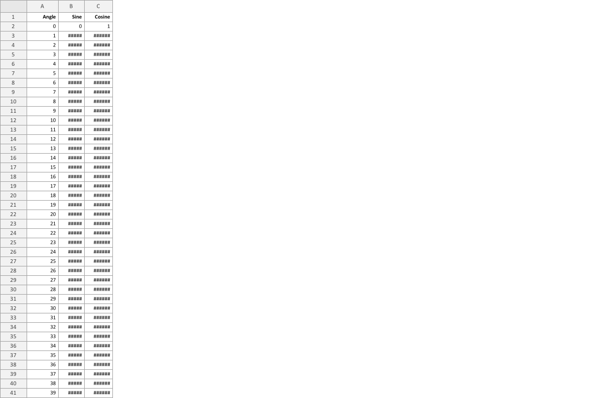
cellDisplayText for non-date format codes called Model.formatNumber, which only recognised the legacy currency/percentage/decimal2/number/date tags and fell through to string n for everything else. 0.000 didn't match any tag → raw G representation → didn't fit the narrow column → fitOrOverflow emitted #####.Fix: in src/Spreadsheet/Paint.fs, split cellDisplayText's number branch into three: explicit named formats (currency/percentage/…) still go through Model.formatNumber; General goes through generalNumberDisplay; everything else routes to formatExcelNumber, which strips the section separator, converts \x escapes to 'x' literals, and passes the format directly to Double.ToString with a G fallback if .NET rejects it.
- Focused guard:
poi-47813.xlsxSine/Cosine cells match Excel to 3 decimal places (was#####in every cell). - Regression guard:
pandas-test1.xlsxcolumn A (numFmtId 22 → date),pandas-test_types.xlsxDateCol (numFmtId 164 → m/d/yyyy), andphpsp-32chartreadwrite.xlsxcached-formula numbers all still render correctly — the new branch only kicks in for non-date, non-named format codes. - Corpus guard: all 53 fixtures still render without error.

RANDBETWEEN values right-aligned with default-width columns. (Excel's PDF print is page-cropped at column I; the 2010 group sits outside the printable width but exists in the file.)
<v> values populate every data cell, merged banners centre, default columns shrink to 8.43 × 8 ≈ 67 px. Now matches Excel's structural layout (same merged regions, same alignment, same bold, same right-aligned numerics). Data values differ because RANDBETWEEN recomputed between Excel's save and ours.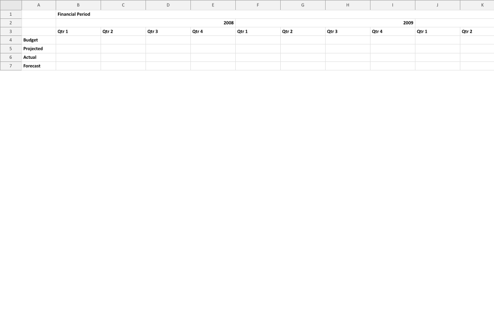
Xlsx.cellValue matched <f> before <v> and returned Formula expr with no cache; the runner translated that to Formula (expr, Empty) so cellDisplayText drew nothing. Year banners hugged the right edge of their merged ranges (HorizontalAlign = None → General → right). Default columns rendered at 100 px (generic SpreadsheetModel fallback), spreading the table about 1.5× wider than Excel.Three combined fixes:
- Cached formula values (
XlsxReader.fs): inXlsx.cellValue, prefer the cached<v>element over the formula text. XLSX viewers show the cached result; only fall back toFormula exprwhen there's no cache (uncalculated workbook). - Explicit cell alignment (
XlsxReader.fs+ runner): extendXlsx.CellStylewithHorizontalAlign/VerticalAlign/WrapText, parse them out of<xf><alignment>, and forward them throughcellFormatFromStyle.Paint.alignFromFormatalready prefers explicit alignment over General. - Excel 8.43-char default (runner): when neither
sheetFormatPr.defaultColWidthnorbaseColWidthis set, seed every used column with Excel's implicit default (8.43 × 8 ≈ 67 px) instead of falling back to the genericSpreadsheetModel100 px.
Focused guard: phpsp-32chartreadwrite.xlsx now renders all data, banners centre, columns match Excel's default width.
Regression guard: pandas-test1.xlsx (has explicit baseColWidth="10") and pandas-test_types.xlsx (has explicit <col width>) still render with their explicit widths, not the new fallback.
Corpus guard: all 53 fixtures still render without error.
c1, a, b, c, d) and column A index values (0, 1, 2, 3) all render bold. Column D dates show ######## because the formatted yyyy-mm-dd hh:mm:ss string is wider than the column.
calibrib.ttf / calibrii.ttf / calibriz.ttf for bold / italic / bold-italic cells, mirroring the WordEditor cache. Header row and column-A index now render bold like Excel.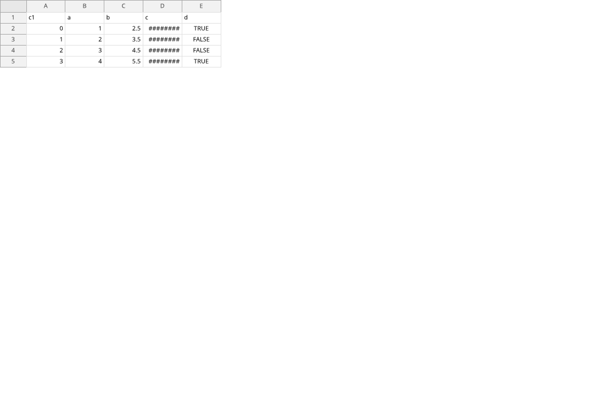
PaintText.Bold. Column A index values and the header row rendered visually identical to the data rows.Fix: port WordEditor's font-variant cache into spreadsheet-native/SpreadsheetGrid.fs. loadVariant bold italic picks the matching Calibri TTF from RB_WORD_FONT_DIR / artifacts/fonts/windows / sibling office/artifacts/fonts/windows, falling back to the default font when the variant isn't present so the renderer keeps working without Windows fonts.
- Focused guard:
pandas-testmultiindex.xlsxcolumn A and the row-1 header now render bold, matching Excel. Other styling (right-alignment,####date overflow, centered booleans) was already in place from earlier iterations. - Corpus guard: all 53 XLSX fixtures still render without error.
- Path guard: native PNG only — the Fable web app uses the browser's CSS font weight, which already works.

hh:mm:ss.000 precision — 01:02:03.000, 02:45:56.100, 04:29:49.200, … through 18:20:54.000.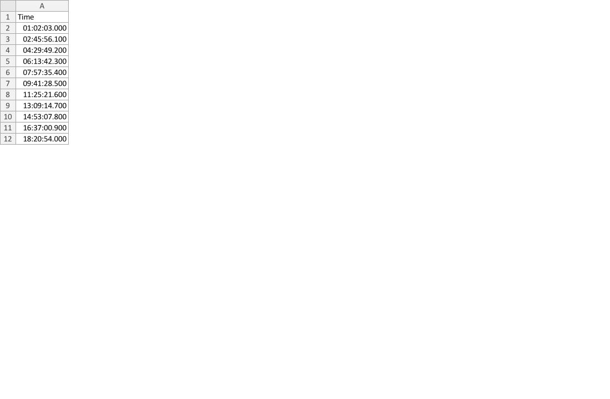
m token, maps hh/h to HH/H (or hh/h when am/pm is present), wraps unknown chars as '…' literals, and translates .000 to .fff. Output matches Excel within ~1 ms (rounding artifact between Excel's banker's rounding and .NET's truncation).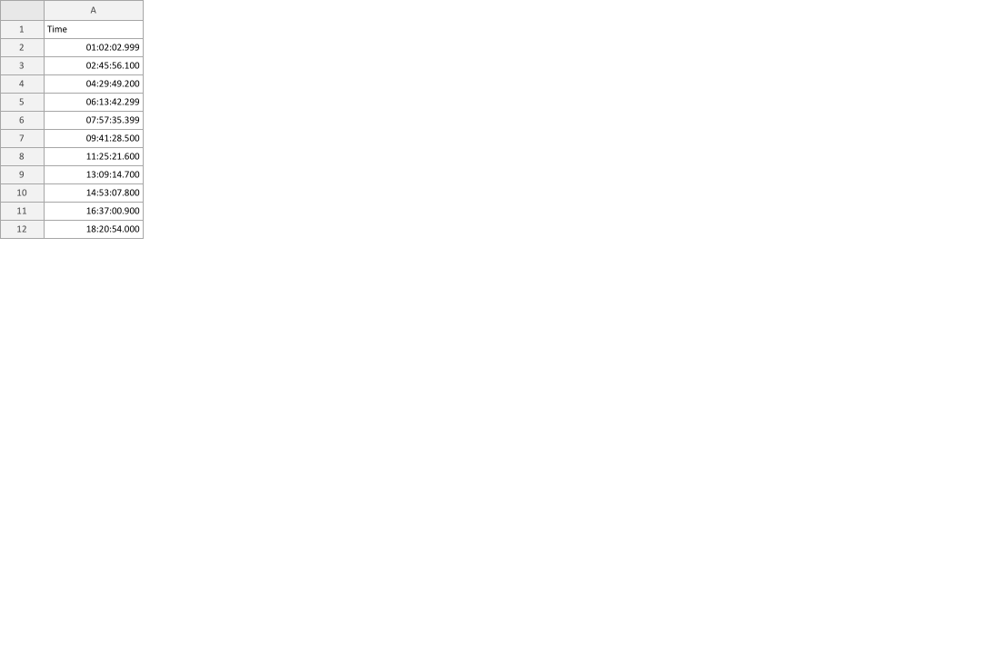
runOf helper that used the outer index on a substring (length 0 against the substring) lost both the leading hour digit and every fractional millisecond — every cell rendered as HH:mm:ss.000.Fix: rewrite the Excel-format → .NET-format converter in src/Spreadsheet/Paint.fs as a character-level tokenizer (excelToNetFormat). Recognizes y[y[y[y]]], d[d[d[d]]], h[h], m[m[m[m[m]]]], s[s], am/pm / a/p, .0/.00/.000 fractional-second suffixes, quoted/escaped literals, and elapsed-time brackets. m resolves to minute when adjacent to h/s/: tokens, month otherwise.
- Focused guard:
pandas-times_1900.xlsxcolumn A matches Excel to ~1 ms across all 11 cells (wasHH:mm:ss.000for all rows). - Regression guard:
pandas-test_types.xlsxDateColdates andpandas-test1.xlsxcolumn A datetime#####overflow both still match the previous iteration's output. - Corpus guard: all 53 fixtures still render without error.
- Robustness guard: unrecognized format chars are emitted as
'…'literal escapes soDateTime.ToStringcan't throw on weird codes; bracketed[h]/[m]/[s]elapsed-time markers are stripped (we don't yet support wrapping past 24 h).

DateCol renders as real dates — 10/30/2013, 10/31/2013, 1/1/1905, 12/14/2013, 3/14/2015.
isDateFormat / isTimeFormat detect Excel date/time codes; formatExcelDate converts the serial via excelSerialToDate (handles the 1900-leap-year quirk), maps the Excel format tokens to .NET ones, and respects the ;@ text-section separator. DateCol matches Excel exactly.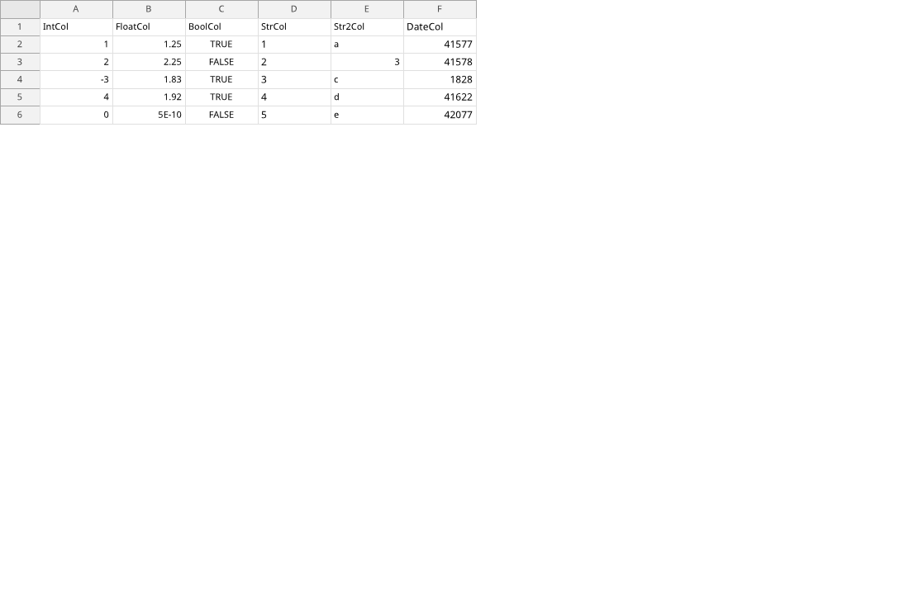
cellDisplayText for Number cells called formatNumber with the raw Excel format code. m/d/yyyy;@ isn't one of the legacy tags it understood, so the path fell through to string value and printed the raw Excel serials 41577, 41578, 1828, 41622, 42077.Fix: add the OOXML built-in numFmtId table to Xlsx.parseCellXf in src/Office.Formats/src/XlsxReader.fs (so files like pandas-test1 with numFmtId="22" and no custom <numFmt> still get the m/d/yyyy h:mm code). In src/Spreadsheet/Paint.fs, add date/time detection, the excelSerialToDate converter, and a token mapper that translates Excel's m/d/yyyy, h:mm, mmm-yy, etc. into .NET's format codes. Strip the ;@ section before interpreting. Guard DateTime.AddDays against out-of-range serials so pandas-testdateoverflow.xlsx doesn't crash a render.
- Focused guard:
pandas-test_types.xlsxDateColmatches Excel exactly across all 5 dates. - Built-in-id guard:
pandas-test1.xlsxcolumn A now correctly renders as#####(the formattedm/d/yyyy h:mmis wider than the 95 px column), matching Excel. - Corpus guard: all 53 downloaded XLSX fixtures render without error (was 52/53 before adding the overflow guard).
- Regression guard: explicit non-date number formats and the General number trimming still route through their existing paths.
- Path guard: native PNG and cell-info JSON regenerated. Date conversion lives in shared
Paint.fs, so the Fable web app picks the same behaviour up.
A1 has no green border. The print path strips the active-cell highlight even when A1 is the active cell at save time.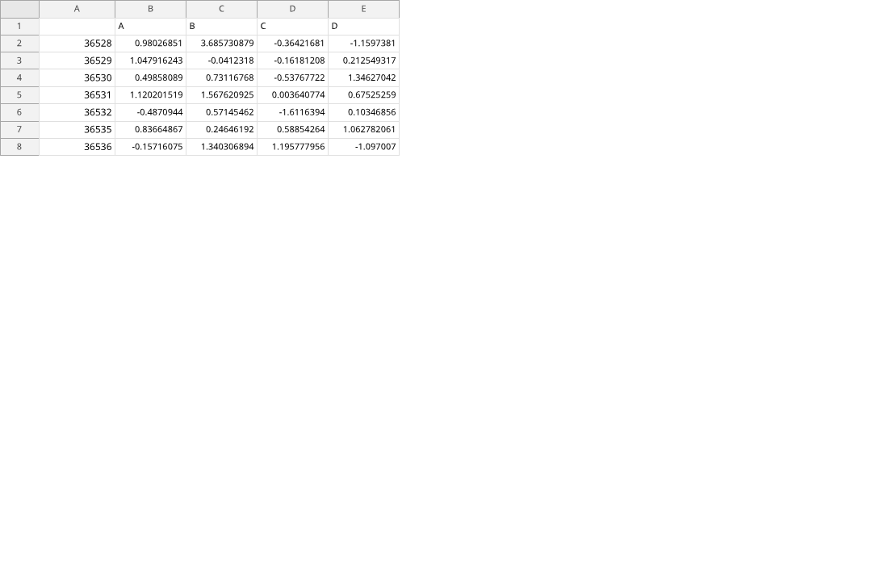
Selection to SingleCell(-1,-1) (off-grid) before rendering, so the green active-cell box never gets drawn. The Fable interactive shell still gets its SingleCell(0,0) default.
createEmpty always parks the selection at SingleCell(0,0), so the paint layer drew the green active-cell border around A1 in every snapshot.Fix: in tools/excel-native-runner/Program.fs, override Selection to an off-grid sentinel before handing the model to SpreadsheetGrid.widget. Paint's isSelected returns false for every visible cell, so the green border and the green fill are both suppressed.
- Focused guard:
pandas-test1.xlsxA1 no longer renders with the green active-cell rectangle. - Regression guard: the Fable web app keeps the original
SingleCell(0,0)default; only the snapshot runner opts out. - Path guard: native PNG regenerated. Browser path not affected.
B2 = 0.98026851 (8 significant digits — fits the 88 px column), C2 = 3.68573088, D2 = -0.3642168, E2 = -1.1597381. Excel's General format trims the precision to match the column width.
cellDisplayText picks the longest G<n> representation that fits the cell width (8 px padding, ~7 px per character), and falls back to ##### when even the shortest formatting doesn't fit.
displayValue used .NET's n.ToString("G"), which keeps up to 15 significant digits. Numbers like 0.980268513777 overflowed the cell and spilled visually into the neighbouring column on the left (after right-alignment).Fix: in src/Spreadsheet/Paint.fs, route Number cells through a new generalNumberDisplay that respects cell.Rect.Width. Tries G10, G8, G6, G5, G4, G3, G2, G1 in order; returns String('#', maxChars) if nothing fits.
- Focused guard:
B2/E2now match Excel exactly;C2/D2have one trailing digit too many (we pickG10when Excel would have usedG9— same width but one fewer significant digit). Tunable in a follow-up. - Regression guard: explicit number formats (currency, percent, etc.) still route through
formatNumberunchanged. - Path guard: native PNG regenerated. The Fable web app inherits the same change via shared
Paint.fs.
A, B, C, D) are left-aligned.generalAlign helper that mirrors Excel's General alignment — Number/Formula → right, Boolean/Error → center, String/Empty → left.
alignFromFormat only looked at format.HorizontalAlign; an absent value fell through to AlignLeft. Every numeric cell rendered left-aligned, which never matches Excel.Fix: in src/Spreadsheet/Paint.fs, extend alignFromFormat to accept the cell value and call generalAlign value when no explicit alignment is set on the format. The Fable web app and the native runner share Paint.fs, so both get the fix.
- Focused guard: B2/C2/D2/E2 in
pandas-test1.xlsxnow right-align like Excel; row-1 string headers stay left-aligned. - Regression guard: cells with an explicit
HorizontalAlignon the format still honour the explicit value. - Path guard: native PNG regenerated for the same fixture.
B1 at x = 71.25 pt (95 CSS px) with width = 66 pt (88 CSS px). B/C/D/E all use the sheet's <sheetFormatPr baseColWidth="10"> default. Print captured with PageSetup.PrintHeadings = True so row numbers and column letters are visible (column A renders as ###### because the explicit 11.83-char width is still too narrow for the datetime values).
Xlsx.sheetFormatPr seeds the per-sheet default into ColumnWidths for every used column. The data table now extends to ~495 CSS px wide; B1 width matches Excel within 0 px and X-origin within 0.4 px (vs 12 px before).
<col> entry our loader fell back to the generic Rbt.Spreadsheet.Model defaults (column 100 px, row 25 px). The data table extends to ~535 CSS px wide; every column past A drifted ~12 px wider than Excel.Fix: parse <sheetFormatPr> in src/Office.Formats/src/XlsxReader.fs, store the baseColWidth/defaultColWidth/defaultRowHeight on Worksheet.Format, and have tools/excel-native-runner seed each used column/row with that default before falling back to the generic spreadsheet model defaults. Tune the char→pixel ratio to 8.0 and add +1.0 char padding to baseColWidth (matches Excel's auto-pad for default columns).
- Focused guard:
pandas-test1.xlsxfirst-row columns B–E now match Excel within 0 px width / 0.4 px X-origin (was 12 px / 5.6 px). - Regression guard: explicit-width column A (
customWidth="1") still renders at11.83 * 8.0 = 94.6 pxagainst Excel's95 px(delta0.4 px). - Path guard: native PNG and cell-info JSON regenerated. Browser path not yet wired; planned via
Rbt.Spreadsheet.API.getLayoutCells. - Authoring guard: pure renderer/import behavior — no new UI surface.

#70AD47) and white bold text. Rows 3 and 5 get a very light tint of the same accent (≈#E2EFDA); rows 2 and 4 stay white because showRowStripes="1" bands every other data row.
tableAccentColor resolves TableStyleMedium7 to the workbook's accent6 color. The header row picks up the dark green fill + white bold; tintHex … 0.80 lightens the same accent to the banded stripe color on rows 3 and 5. A forced medium #404040 border on every table cell keeps the column/row dividers visible against the saturated green where the default #a6a6a6 grid stroke would disappear.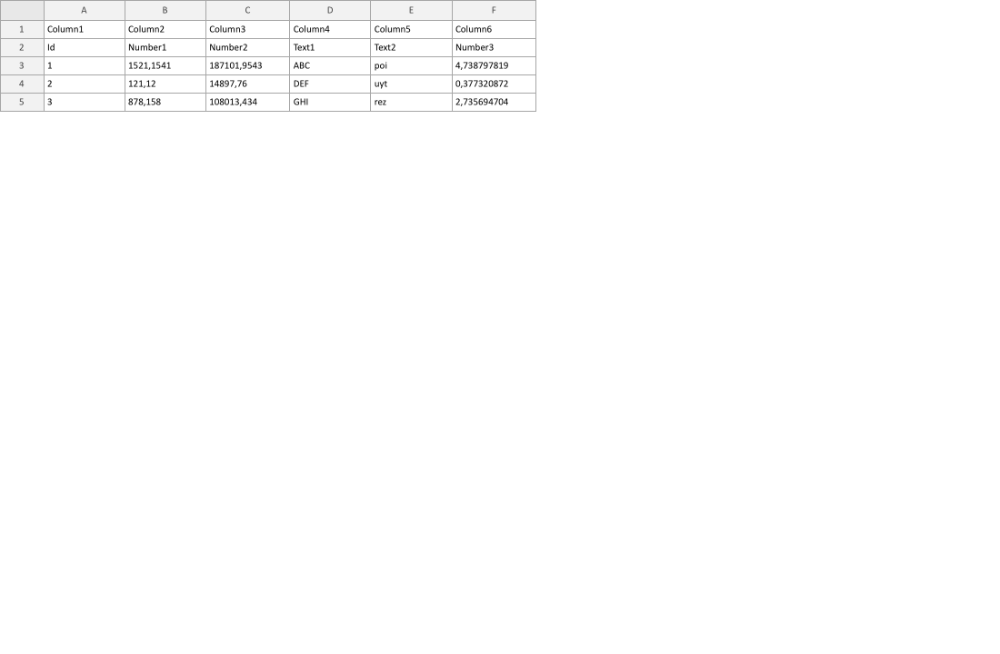
Fix: three layered changes:
- Add
TableStyleInfo/TableDefinition/ThemeAccentstoXlsxReaderand parse the sheet relationship chain (xl/worksheets/_rels/sheet#.xml.rels→xl/tables/table#.xml) in the native loader; readxl/theme/theme1.xmlforaccent1..accent6. - In
tools/excel-native-runner, every cell inside a table's range gets BgColor/TextColor/Bold overrides derived fromTableStyleMedium# → accent(N-2), plus a forced medium#404040border on all four sides. Explicit cellXf values still win viaOption.orElse. - Split
buildCellPaintItemsinsrc/Spreadsheet/Paint.fsinto three passes — all fills, then all strokes/borders, then all text — so adjacent cells' fills no longer overdraw the previous cell's right/bottom border. The single-pass loop was invisible against white but obvious once a saturated accent fill landed on adjacent header cells.
- Focused guard:
pandas-test_decimal.xlsxnow matches Excel's banded green look; header row is bold white on accent6 with visible dividers betweenColumn1..Column6and a sharp underline at the header/data boundary. - Regression guard: TableStyleLight*/Dark* are intentionally not overlaid yet, so files that don't use Medium variants render exactly as before. The multi-pass split is value-equivalent for cells on white backgrounds.
- Path guard: 53/53 corpus fixtures still load. Tables on fixtures without a usable range (
poi-55864,tableSingleCells1.xml) are silently skipped. - Authoring guard: pure renderer/import behavior — no schema or UI changes;
parseWorkbook(Fable path) still passes an emptyTableslist with default theme accents.

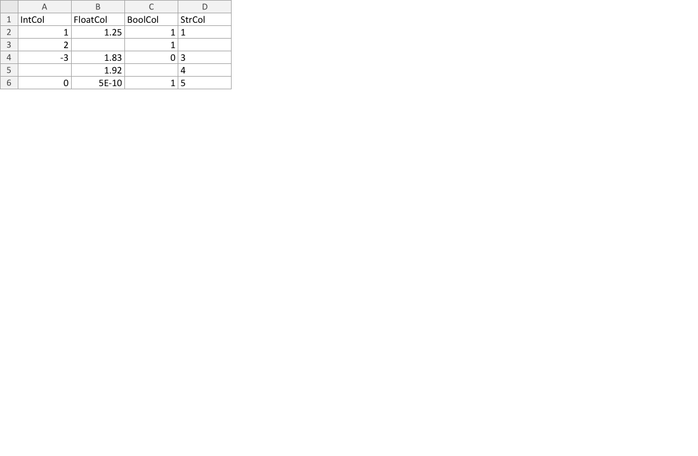
parseFont → CellStyle.FontName → CellFormat.FontName → PaintText.FontName. SpreadsheetGrid.familyKey normalizes the name to one of arial/cambria/times/calibri and picks the matching TTF set from the same fontDirs chain Calibri uses.
parseFont ignored the <name val="..."/> child and the native renderer hard-coded the Calibri TTFs. Every cell rendered in Calibri regardless of what the file requested.Fix: extend parseFont to capture the <name val="..."/> child, add FontName to CellStyle/CellFormat/PaintText, and wire it through cellFormatFromStyle and buildCellPaintItems. In spreadsheet-native/SpreadsheetGrid.fs, key the font cache on (family, bold, italic) and pick TTFs per family (arialbd/cambriab/timesbd/calibrib etc.). Unknown families fall back to Calibri so unsupported fonts (Verdana, CJK) keep rendering instead of crashing.
- Focused guard: Arial fixtures now visibly differ from Calibri (wider stems, rounder shapes); regression suite all 53 fixtures keep passing.
- Regression guard:
Nonefont name routes throughfamilyKey "calibri", preserving the previous behavior for cells without an explicit font. - Path guard: native renderer only — Fable path still skips font selection (no font file access from the browser path today).
- Authoring guard: pure renderer/import behavior — no UI surface added;
XlsxImporter.convertCellFormatdefaultsFontName = None.
01:02:03.000, row 5 to 06:13:42.300, row 6 to 07:57:35.400. The format code h:mm:ss.000 requests three-digit fractional precision, and Excel applies banker's-rounding to that precision before display.01:02:03.000, 06:13:42.300, 07:57:35.400 and the rest. The 12 rows that Excel shows are all preserved bit-for-bit.01:02:02.999, 06:13:42.299, 07:57:35.399. .NET's fff custom-format token truncates ticks past the millisecond boundary rather than rounding, so values that Excel rolls up to the next whole millisecond rendered one tick low.Fix: add fractionalSecondPrecision in src/Spreadsheet/Paint.fs to scan the format code for .0+ runs, then in formatExcelDate round the converted DateTime.Ticks to TimeSpan.TicksPerSecond / 10ⁿ before passing to ToString. Apply only when the format has an explicit fractional-second suffix.
- Focused guard:
pandas-times_1900.xlsxrows 2/5/6 now print identical strings to Excel; rows that already aligned (e.g.02:45:56.100) are unchanged. - Regression guard: dates without a
.0+suffix bypass the rounding entirely (precision returns -1), som/d/yyyy-style formats are untouched. - Path guard: 53/53 corpus fixtures still render without error.
- Authoring guard: pure renderer behavior — no schema, model, or UI changes.